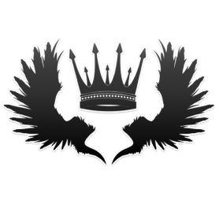

Kyrian Malone
&
Jamie Leigh

Il était une fois,
La Reine et la Voleuse
~ Tome 1 ~
Edition corrigée par Jennifer Baragoin
Et Béatrice Guillart
~ Collection ST Éditions ~
Ce livre est une fiction. Les personnages sont inspirés des contes des frères Grimm, œuvres du domaine public, et de diverses légendes, mythes ou folklores médiévaux.
Copyright © 2013
par Kyrian Malone et Jamie Leigh
Tous droits réservés. Toute reproduction, diffusion ou utilisation partielle est strictement prohibée sans l'accord préalable des auteurs et de ST Éditions.
Toutes les infos sur :
http://steditions.com/
Cette histoire a été rédigée en novembre 2013
* * *
La pluie tombait averse et la route se couvrait d’une pellicule d’eau. Les essuie-glaces allaient et venaient sans arrêt sur le pare-brise dans un bruit régulier et pénible. Les mains sur le volant, Emma ne décolérait pas. Le pied sur l’accélérateur, elle roulait sans même connaître sa destination. Tout ce qu’elle voulait était s’éloigner de son appartement, de Boston et de sa petite-amie qu’elle avait trouvée au lit avec une autre. Le pire était sûrement la sensation d’avoir été prise pour une imbécile, une gentille fille bien trop naïve pour soupçonner quoi que ce soit. Elle avait pris sa garce de petite-amie, son amante et leurs vêtements et les avait jetés en dehors de son appartement sans aucun ménagement. Quelques verres de whisky plus tard, elle était montée dans sa voiture pour rouler…
Maintenant sur l’autoroute en direction du Sud, elle n’y voyait pas à plus d’une centaine de mètres et les conditions pour rouler étaient épouvantables. L’orage ne cessait de gronder, de cracher ses éclairs tout autour de l’autoroute et déversait une pluie dense et grasse qui collait au bitume. Du revers de sa main, elle essuya la buée réfractaire sur son pare-brise et s’énerva :
— Putain, quelle merde !
Le temps ne l’aidait pas. Ce soir, même les éléments semblaient ligués contre elle et pour couronner le tout, le chauffage ne fonctionnait qu’à moitié. Parce qu’elle avait trouvé bon de changer de voiture trois jours plus tôt. Et pour son anniversaire, elle s’était offert un quatre-quatre pour remplacer sa vieille coccinelle qui l’avait lâchée la semaine précédente. Comparé à son ancien véhicule, l’énorme engin qu’elle s’était acheté prenait des allures de cockpit.
Agacée par le nombre de boutons et d’indicateurs lumineux, elle tenta de trouver celui qui réglait le chauffage pour enlever la buée. Sa main sur le volant, les yeux tournés vers l’écran de réglage, la voiture dévia de sa trajectoire. Alors, un bruit de klaxon prolongé l’arracha à ses tracasseries. Prise de panique, éblouie par les phares d’un camion en face d’elle, elle donna un brusque coup de volant.
* * *
La vie n’était peut-être pas si cruelle, pensait Blanche-Neige. On venait de lui porter son enfant dans un couffin de nourrisson. Près d’elle, son Prince Charmant souriait, son regard empreint de bonheur. La nuit avait pourtant été longue, les souffrances, égales à la durée de son accouchement. Mais il était là, leur fils était enfin né. Toutes ces années à avoir attendu de pouvoir donner naissance, étaient récompensées, le Prince et la Princesse étaient comblés.
— Il est magnifique, dit David.
Blanche-Neige ne quittait pas ce petit être du regard. Vingt-huit ans s’étaient écoulés depuis que la Méchante Reine avait figé le temps pour elle et ses amis. Vingt-huit ans qu’elle avait donné naissance à leur premier enfant, leur fille Emma qu’elle avait dû abandonner sous les menaces de la Méchante Reine. La Malédiction qui aurait dû s’abattre sur eux pour tous les tuer avait été annulée et personne, ni magiciens, ni fées, ni grand sorciers, n’avaient été capables de ramener leur petite Emma, envoyée dans un autre monde pour la sauver.
— Que penses-tu de George ? tenta le Prince en sortant Blanche-Neige de ses réflexions.
Celle-ci l’accusa gentiment du regard.
— C’est le nom de ton père, David !
— Grâce à qui je t’ai rencontrée, rappela le fermier devenu Prince.
Blanche hésita, son regard sur son fils. Dans les prochains jours, serait annoncée sa naissance, de grandes célébrations seraient organisées et Blanche s’attendait déjà à recevoir des menaces de la Méchante Reine, autrement dit sa belle-mère, qui lui vouait une haine sans faille.
* * *
Les deux gardes en armure pénétrèrent dans la salle où la Reine attendait devant son miroir. Le premier d’entre eux, le casque sous le bras, racla sa gorge pour s’annoncer.
— Altesse, fit-il, incertain. Des nouvelles du Royaume de Northumbrie nous sont parvenues.
Il la vit se tourner vers eux, planter son regard froid et autoritaire dans le sien et il n’en fut que plus hésitant.
— Blanche-Neige vient d’accoucher, annonça-t-il.
Un verre de vin à la main, la Reine ne bougea pas, ses traits tendus et le regard plus sombre que la nuit. Une fois de plus, la vie se chargeait de donner à Blanche-Neige des récompenses qu’elle ne méritait pas. Un homme approcha :
— Ma chérie, peu importe cette nouvelle, fit son père. Tu l’as déjà forcée à se séparer de son enfant il y a vingt-huit ans. Tu as su l'enfermer elle, son Prince et ses amis dans une sorte de boucle temporelle pour qu’à jamais, elle vive avec la douleur d’être séparée de sa fille.
— Tu ne comprends donc pas ?! fit la Reine d’un regard accusateur. Quelque chose a changé. Si le temps était encore figé, Blanche-Neige n’aurait jamais accouché.
Elle retourna son regard vers ses gardes.
— Envoyez le Chasseur en reconnaissance. Je veux savoir comment ils ont fait.
— A vos ordres Majesté.
Les deux gardes s’éloignèrent et Regina revint vers son précieux Miroir où était emprisonné le génie.
— Montre-les moi…
— Si je peux me permettre, ce n’est pas une bonne idée votre Altesse.
— MONTRE ! cria la Reine. Je veux les voir.
Le Miroir exécuta la requête de sa Majesté et à travers son reflet, celle-ci put voir Blanche-Neige et le Prince sourire à leur sujet. Elle entendit la voix du Prince :
— Demain, nous organiserons la plus grande fête jamais célébrée dans tout le Royaume pour honorer la naissance de notre fils George.
Regina se détourna de colère et son verre de vin se brisa dans ses mains.
— J’y serai, fulmina-t-elle. J’y serai à leur petite célébration.
— Ma chérie, tu ne devrais pas y aller, tu ne devrais plus y penser. Ils auront certainement doublé leurs effectifs de gardes, ne prends pas de risques.
Mais la Reine n’écoutait guère les recommandations de son père, son esprit déjà tourné vers ce qu’il se passerait le lendemain quand elle rejoindrait le Royaume de Blanche-Neige et de son fermier de Prince.
* * *
Un mal de tête épouvantable arracha Emma de son inertie. Elle grommela quelques mots incompréhensibles et ouvrit péniblement les yeux. La lumière du jour autour d’elle lui indiqua qu’elle avait passé sa nuit dans la voiture. Mais des souvenirs de la veille la percutèrent en chaîne pour lui rappeler ce qu’il s’était passé. La pluie, l’orage, une forte lumière et plus rien. Alors, elle redressa le visage pour évaluer les dégâts et repoussa l’air bag qui avait explosé devant elle. Mais ses muscles semblaient encore engourdis et son crâne restait douloureux. Elle bascula la tête contre l’appui du siège et soupira.
— Oh bordel, râla-t-elle.
Elle prit quelques secondes pour se resituer et remettre les choses en ordre. Sa voiture avait heurté un tronc d’arbre de plein fouet et heureusement, elle ne sentait aucune fracture, ni aucune blessure grave. Quand elle posa les yeux sur les alentours, son expression changea brusquement.
— Qu’est-ce que c’est que ce délire ?
Autour de la voiture, plusieurs hommes en habits de clochards braquaient des arcs dans sa direction. Elle les détailla avec insistance, confuse et déboussolée. D’où sortaient ces types ? En les scrutant avec plus d’attention, ils n’avaient presque rien de civilisés et ne portaient que des guenilles. Pourtant, elle connaissait les forêts des environs pour y avoir parfois fait du jogging ou des balades. Jamais, elle n’avait entendu parler d’une secte ou de sans-abris vivant dans ces bois un peu éloignés de Boston. Alors, lentement, elle ouvrit le petit coffret sous son accoudoir et prit son pistolet avant de le coincer à sa ceinture. Méfiante, elle préférait prendre toutes ses précautions devant ces hommes armés. Elle ouvrit la portière et les hommes sursautèrent, nerveux. Elle sortit lentement de sa voiture et leva les mains en signe de paix.
— Hey, tout doux, les gars, fit-elle en essayant de rester calme. J’ai eu un léger accident hier soir et… Et je viens de me réveiller.
Un des hommes à la barbe mal rasée approcha d’un pas sans lâcher son arc toujours braqué vers elle. Il fit signe à ses acolytes d’approcher aussi et quatre autres se ruèrent sur elle. Surprise, elle fut aussitôt assaillie et jetée sur le ventre.
— Hey ! cria-t-elle. Mais qu’est-ce que vous foutez ?!
Elle voulut se débattre, mais l’un de ses agresseurs lui lia les poignets avec de la corde avant qu’un autre ne la remette sur ses pieds sans la moindre délicatesse. Cette fois, elle ne garderait plus son calme et fixa le premier d’un regard plus froid.
— Qu’est-ce que vous voulez ?! J’ai rien sur moi à part dix dollars !
— Mettez-la avec les autres, lança-t-il. On pourra certainement en obtenir un bon prix.
Sans ménager la femme, les deux hommes obéirent et poussèrent celle-ci en contre-bas des arbres où attendaient deux chariots renfermant plusieurs personnes, hommes, femmes et enfants.
— Et pour l’étrange carrosse Chef ?
— Essayez de le tracter avec les chevaux, sinon, laissez-le…
* * *
Belle avait constaté l’humeur joyeuse de Rumplestiltskin[1] depuis leur réveil ce matin. Ce dernier n’avait pas changé ses habitudes pour autant, passant sa matinée à filer son or pendant qu’elle avait fait ses quelques tâches quotidiennes de nettoyage dans l’immense demeure de la Créature. Elle le trouva dans la chambre en train d’ajuster le col de sa tenue brodée au fil d’or.
— Devons-nous fêter quelque chose ? demanda-t-elle en le voyant apprêté.
— Pas encore, très chère. Mais demain, oui, fit-il en se tournant vers sa compagne. Un grand évènement va être célébré. Je serai ton cavalier et tu seras ma cavalière.
— Vraiment ? Et l’évènement sera en quel honneur ?
— L’amour, dit-il. L’amour d’une mère envers son enfant, l’amour d’un mari envers sa femme, l’amour d’une amante qui a trop longtemps attendu celui qui lui était destiné.
Belle plissa les yeux. Rumple parlait parfois en énigme qu’elle ne cherchait plus toujours à décrypter. Mais elle retenait une bonne nouvelle :
— Alors tu vas m’emmener danser ? Tu sais combien j’aime danser n’est-ce pas ?
La Créature eut un sourire réjoui et tendre qu’il adressa à sa bien-aimée.
— Cette soirée sera mémorable, dit-il.
* * *
La nuit était tombée sur les Cinq Royaumes. La Princesse, le Prince et leurs loyaux sujets s’étaient réunis autour de la table ronde de Northumbrie.
— La sécurité sera renforcée à chaque entrée et sortie du château, annonça Sir Lancelot[2].
— Personne ne pourra utiliser de magie sans que nous le sachions, reprit la Fée Bleue. Les nains veilleront sur George à tour de rôle.
— Je persiste à dire que vous ne devriez pas vous précipiter, intervint Jiminy Cricket.
— Le peuple saura tôt ou tard que nous avons un héritier à la couronne, dit le Prince, et mieux vaut faire l’annonce dès à présent qu’attendre que la Méchante Reine prépare l’un de ses plans maléfiques pour nous nuire.
— Soyez certains qu’elle viendra, commenta Geppetto. Elle ne manquera cette soirée pour rien au monde.
— Nous saurons l’accueillir, fit Granny.
— Peut-être même pourrons-nous la capturer et mettre fin définitivement à ses menaces, dit Scarlett.
Un garde entra.
— Princesse ?
— Qu’y a-t-il ? demanda Blanche-Neige.
— Nous avons repéré l’espion de la Reine aux abords du château.
Le Prince David voulut se lever, sa main sur le fourreau de son épée.
— Je vais aller l’accueillir.
— Non, fit Blanche en le retenant. Laissons-le croire que nous ne l’avons pas repéré.
— Comme tu veux mais autant que nous le gardions à l’œil.
Le Prince donna ses ordres aux gardes qui s’éloignèrent sans attendre. Malgré les précautions prises pour les célébrations, Blanche-Neige n’était pas pleinement rassurée. Elle savait mieux que quiconque de quoi sa belle-mère était capable. Elle avait fait assassiner son père, lui avait fait perdre sa fille et avait fait en sorte que le temps pour elle et ses amis s'arrête au point de ne plus vieillir, ni enfanter. Pourtant, quelque chose ou quelqu’un avait brisé le sort et son fils était né.
* * *
Les bois étaient plus frais durant la nuit et la cage dans laquelle les brigands l’avaient enfermé était excessivement inconfortable. Cependant, le Pirate restait calme, patient même, tandis que les prisonniers près de lui s’agitaient, incertains de leur avenir.
— Vous avez quelque chose de différent des autres femmes, lança-t-il à la blonde en face de lui. Et je ne parle pas seulement du fait que vous n’ayez pas crié quand ils vous ont marquée.
Emma ne cessait plus de se poser des questions depuis des heures. Etait-elle morte dans cet accident ? L’avait-on envoyée en Enfer ? Etait-ce une sorte de blague ? Pourtant, le fer rouge qui l’avait tatoué à l'intérieur du poignée l’avait réellement fait souffrir. Maintenant, elle était marquée tel du bétail qu’on ne tarderait pas à vendre. Parce qu’en plus de la situation incroyable dans laquelle elle se trouvait, les bribes de conversation qu’elle avait surprises n’avaient fait que la plonger dans une confusion sans borne.
— Ouais, c’est sûrement parce que je viens pas d’ici et que je sais même pas où je suis, là !
Elle avait beau regarder autour d’elle, chercher des réponses à travers son entourage, l’environnement et les gens qu’elle croisait, rien n’expliquait ce retour soudain au Moyen-Age. Dans sa cage à animaux, on l’avait enfermée avec deux hommes aussi mal rasés l’un que l’autre. Celui qui venait de lui parler arborait un crochet à la place de sa main gauche. Plutôt beau garçon, vêtu comme un noble de la renaissance en version sombre, il ne semblait nullement inquiet. L’autre, plus simplement habillé, à la mode clochard des bois, observait le monde autour d’eux, comme s’il attendait quelque chose. D’ailleurs, il ne tarda pas à prendre la parole.
— Ne vous inquiétez pas, on ne va pas rester ici très longtemps…
Il sourit à Emma et tendit sa main.
— Moi c’est Petit Jean.
Emma afficha une mine plus que perplexe, voire incrédule.
— Petit Jean ? répéta-t-elle.
— Et vous ? C’est quoi votre nom ? demanda-t-il la main toujours tendue.
Ironique, Emma répondit :
— Robin…
Elle serra sa main toujours aussi perplexe, mais son interlocuteur ne sembla pas comprendre sa blague.
— Robin, content de te rencontrer.
— Et moi, c’est Crochet, ajouta le deuxième homme.
Cette fois, Emma se mit à rire, plus que nerveuse.
— Ouais et tu vas me dire que ton bateau t’attend sur le quai et s’appelle le Jolly Roger ?!
Crochet fronça les sourcils, sérieux et troublé.
— Où as-tu entendu parler de moi ? demanda-t-il.
L’expression d’Emma changea et son sourire disparut de ses lèvres. Ses deux compagnons de cellule ne semblaient pas rire avec elle, ni plaisanter.
— Ok, c’est pas marrant, là. C’est une caméra cachée ou un truc de ce genre ? Je suis censée garder mon calme et rester le plus longtemps possible dans cette cage à lapin ?
A cet instant, un homme fit cogner son gourdin contre les barreaux et leur cria dessus.
— On la boucle là-dedans !
Plus les minutes passaient, moins Emma se rassurait. Comment pouvait-elle rester sereine dans ces conditions ? Les gens autour d’elle portaient des vêtements du Moyen-Age, parlaient de Reine, de Royaume, de bals et de pièces d’or. Ses nouveaux amis, en plus d’en avoir l’allure, portaient les noms de personnages de contes de fées ou de romans. Alors qu’elle réfléchissait en regardant la marque laissée par le fer rouge sur sa main, des cris s’élevèrent et une soudaine cohue s’empara de l’endroit où ils se trouvaient. Des hommes se ruèrent sur leurs geôliers, se battirent contre eux, armés d’épées, de bâtons et d’arcs. Trois d’entre eux ouvrirent les cages et un quatrième s’approcha de la leur pour la déverrouiller.
— Tuck ! fit Petit Jean en sortant de la cage, je suis content de te voir, mon ami.
Emma suivit les hommes sans comprendre, surtout parce qu’elle n’avait pas envie de rester dans la cage. Heureusement, les gardes n’avaient pas prêté attention à son pistolet, toujours à la taille. Avec Crochet, ils suivirent Petit Jean et son ami en se frayant un chemin à l’écart des combats. Mais quand un homme décocha une flèche en direction de Petit Jean, elle le poussa brusquement sur le côté. L’homme se redressa et la regarda d’un œil surpris.
— Merci, Robin, fit-il, je te dois la vie ! Venez, ne tardons pas.
Ils s’éloignèrent en courant à travers les arbres tandis que d’autres de leurs amis les imitaient après avoir libéré leurs compagnons d’armes.
Après quelques minutes, Tuck s’arrêta dans un sous-bois, essoufflé par son surpoids. D’autres de leurs compagnons avaient réuni plusieurs chevaux dans l’attente de la libération de Petit Jean et des autres prisonniers.
— Nous allons pouvoir rentrer au camp, dit Tuck.
Petit Jean s’adressa à Robin :
— Toi et ton ami Crochet êtes les bienvenus dans notre groupe si vous ne savez où aller.
Emma ne savait plus rien, ni où elle était, ni à quelle époque elle était. Parce qu’elle avait beau ne pas vouloir le croire, tout l’amenait à penser qu’on l’avait jetée dans une autre époque. Même Frère Tuck faisait partie de la bande ! Elle vit Crochet grimper sur un des chevaux et posa des yeux incertains sur celui qui l’attendait. Elle n’avait fait du cheval qu’une ou deux fois dans sa vie… Hésitante, elle prit les rênes d’une main et posa l’autre sur la selle. Son pied à l’étrier, elle donna l’impulsion et monta sur le dos de son cheval. Déjà, les autres étaient prêts et l’attendaient.
— En route, lança Petit Jean.
Les chevaux avancèrent et le Capitaine donna une tape sur l’arrière-train du cheval de Robin pour que son destrier avance. Il resta à sa hauteur et fit naturellement la conversation :
— Tu n’as pas vraiment l’air dans ton élément dans cette forêt et parmi ces hommes. D’où viens-tu ?
Emma jeta un coup d’œil à son cheval qui avançait au pas.
— De Boston, mais je crois pas que tu connaisses si tu t’appelles Crochet.
Le Capitaine lança un coup d’œil à ses amis de passages qui avançaient devant eux et derrière eux.
— Je suis moi aussi un étranger dans cette région, si ça peut te rassurer.
Heureusement, Emma connaissait ses leçons sur les contes de fées et les romans célèbres.
— Ouais, tu viens du Pays Imaginaire, je suppose...
Mais sa réplique ne fit pas rire Crochet dont le regard incertain et presque inquiet retourna sur la jeune femme.
— Comment le sais-tu ? Qui t’a parlé du Pays Imaginaire et qui t’a dit que mon bateau s’appelait le Jolly Roger ? Je ne te connais pas, je n’oublie jamais un visage.
Comment expliquer à un personnage de fiction qu’elle venait du monde réel ? Etait-ce au moins un monde réel pour tous ces gens ? Plus elle voulait réfléchir en quête de réponses, moins elle comprenait.
— Un type avec un crochet à la place de la main, ça court pas les rues, alors faut croire que j’ai entendu parler de toi…
Parce qu’elle ne pouvait décemment pas lui dire la vérité, une histoire qu’elle-même ne savait expliquer.
Crochet lui lança un regard, toujours étonné malgré tout. Il avait remarqué les étranges habits que la jeune femme portait. Peut-être venait-elle aussi d'une sorte de Pays Imaginaire ? Un autre monde qu'il ne connaissait pas ?
Après plus de deux heures de cheval, ils s'arrêtèrent enfin. Au beau milieu des bois, non loin d'une rivière, Petit Jean et ses amis avaient installé un camp ou plutôt un petit village en pleine nature. Emma fut surprise de constater le nombre important de personnes qui vivaient là, dans de toutes petites maisons. Des enfants jouaient plus loin, entre les arbres, munis de fausses épées et de bâtons. Un coin pour les chevaux avait été aménagé avec des abreuvoirs près d'un petit espace enherbé.
Tous descendirent de leur monture, accueillis par d'autres hommes aussi humblement vêtus que Petit Jean. Celui-ci s'approcha d'Emma et Crochet.
— Voici Crochet et Robin, présenta-t-il à ses amis. J'aimerais que vous leur trouviez une place.
Mais Emma ne comptait pas s'éterniser dans ces bois étranges.
— C'est bon, euh... Petit Jean, je vais pas rester longtemps, j'aimerais rentrer chez moi...
— Bien, répondit Petit Jean en passant un bras autour de ses épaules, mais en attendant, tu es mon invitée. Ce soir, nous festoierons en ton honneur puisque tu m'as sauvé la vie et demain, nous te laisserons repartir !
Emma se retrouva incertaine et jeta un œil hésitant sur Petit Jean. Son étreinte amicale n'avait rien de très excitant. Son nouvel ami devait mesurer environ un mètre quatre-vingt et peser cent kilos. Elle le suivit accompagné de Crochet qui observait lui aussi les environs, méfiant. Les habitants de ce petit village dans les bois avaient construit leur vie ici, avec ce que la nature leur offrait. Ils passèrent à côté de certaines maisonnettes. Des hommes se chargeaient de tailler le bois, d'autres d'aiguiser les lames des épées sur d'énormes enclumes. Plus Emma avançait, plus elle avait l'impression désagréable de se retrouver dans un film d'époque... Ni électricité, ni chauffage, ni lumière, pas même l'eau courante... Devant une sorte de tente, quatre ou cinq femmes se chargeaient de dépecer du gibier autour d'un tas de poils et de plumes. Sur leur passage, Emma croisait des regards interrogateurs et intrigués. Elle et Crochet étaient les inconnus, les étrangers et si ces gens ne vivaient pas à la même époque, ils devaient sûrement réagir de la même façon à la vue d'un nouvel arrivant. Mais Petit Jean tenait visiblement à clamer haut et fort qu'elle lui avait sauvé la vie. Alors, les hommes, les femmes et les enfants les accueillaient avec plus d'enthousiasme et de joie. Ils prirent place autour d'un large feu où l'on avait installé un barbecue d'époque. Trois fourches maintenues par de gros piquets supportaient des carcasses en chair d'animaux et des femmes s'occupaient de les tourner avec attention. Petit Jean lui indiqua sa place, sur un rocher taillé en forme de banc, à côté de lui et ses amis l'imitèrent. Tous les hommes qui ne venaient pas s'asseoir, demeuraient debout autour d'eux, avec les enfants et les femmes. Curieux, ils observaient et scrutaient les étrangers invités par Petit Jean. Emma comprenait donc qu'il existait une hiérarchie dans cette microsociété d'un autre âge. Petit Jean devait occuper le poste de chef, les hommes assis à ses côtés, ses adjoints ou sa garde personnelle et les autres, le peuple.
On lui tendit un gobelet en fer un peu cabossé et son regard incertain se baissa sur le liquide qu'il contenait. A sa gauche, Crochet se pencha vers elle, le même type de verre à la main.
— C'est du vin, expliqua-t-il, vous n'en buvez pas dans ton monde ?
Emma lui lança un regard. Crochet n'avait pas eu besoin de beaucoup d'explications pour deviner qu'elle n'appartenait pas à cette forêt. Mais il parlait d'un autre monde et cette idée la rendait plus confuse encore. Avait-elle effectivement changé de monde, comme Crochet qui venait du Pays Imaginaire ? Comment cela avait-il pu être possible ? Elle respira le parfum du vin rouge et trempa ses lèvres. Etonnée par ses saveurs fruitées et pleines de tanin, elle en avala une bonne gorgée.
— A Robin et Crochet ! lança Petit Jean en levant son gobelet.
Les autres l'imitèrent aussitôt en clamant le faux nom d'Emma et celui de son nouvel ami. Emma ne pouvait se plaindre de leur accueil chaleureux, même si elle demeurait sur ses gardes.
La nuit tomba et ils n'avaient toujours pas quitté leur place. Les femmes avaient servi le repas dans des écuelles de bois et tous se régalaient en se goinfrant littéralement. Heureusement, Emma n'avait jamais été de nature très féminine et n'exigeait pas trop de confort, ni de grands soins dans sa vie quotidienne. Mais manger avec les mains, garder les mêmes vêtements sales aussi longtemps et s'éclairer à la lueur des torches n'avaient jamais fait partie de ses habitudes.
La soirée se prolongea, les hommes s'enivrèrent, certains avaient pris des cithares, des tambours et des flûtes pour égayer l'ambiance et jouer de la musique. Alors d'autres se mirent à danser tandis que Petit Jean et trois de ses compagnons discutaient d'une cérémonie en l'honneur d'un bébé. Les deux ou trois verres de vin qu'Emma avait ingurgités lui montaient à la tête. Le degré d'alcool de ce breuvage devait être plus élevé que celui qu'elle connaissait.
Petit Jean se tourna vers elle et Crochet, une cuisse de lapin dans la main. Il avait dû engloutir une bête entière à lui tout seul, songea Emma qui l'avait observé durant la soirée. Et il mangeait encore...
— Si tu changes d'avis demain et que tu décides de rester, tu viendras avec nous, annonça-t-il.
— Pourquoi ? demanda-t-elle curieuse. Qu'est-ce qui se passe demain ?
Frère Tuck avala une énième gorgée de sa bière et répondit :
— Demain a lieu le bal en l'honneur du Prince Héritier.
Devant l'expression dubitative et incrédule d'Emma, il poursuivit :
— Le fils de Blanche-Neige et du Prince.
— Et pour ce bal, tous les nobles et les Seigneurs du Royaume sont invités, ajouta William, un autre ami proche de Petit Jean. Ils emprunteront la même route qui traverse nos bois à une heure d'ici.
— Nul doute qu'ils transporteront de l'or, des bijoux et des présents pour l'Héritier, précisa Petit Jean.
Sur ces explications, Emma comprenait que tous ces pauvres gens autour d'elle vivaient aux dépens des butins que les hommes ramenaient. Comme l'histoire le contait, Robin des Bois et ses compagnons volaient aux riches pour donner aux pauvres. Et plus le temps passait, plus elle réalisait que toute cette histoire, aussi étrange et farfelue qu'elle paraissait, devenait réalité. Si ces types étaient les vrais Petit Jean et Frère Tuck, où était le vrai Robin des Bois ?
— Vous avez un plan ? demanda Crochet, intéressé.
— Nous les prendrons par surprise au dernier moment, répondit Petit Jean.
Emma n'en revenait pas. Ils parlaient de Blanche-Neige et de son Prince et elle se trouvait en compagnie de Crochet, de Frère Tuck et de Petit Jean. Dans quel monde était-elle tombée ? Etait-ce un rêve duquel elle sortirait le lendemain matin ? Elle l'espérait parce qu'elle ne se sentait pas dans son élément au milieu de ces gens. Même s'ils se montraient sympathiques et chaleureux avec elle, ils vivaient à une autre époque...
— Et s'ils ont une escorte ? demanda Emma logiquement. Vous avez pensé à ça ? Ils pourraient très bien avoir des gardes personnels ou des chevaliers...
Tous les regards se rivèrent sur elle, attentifs et interrogateurs. Elle finit d'avaler sa gorgée de vin et les observa un par un.
— Quoi ? reprit-elle. Je vous apprends rien, là... C'est vous les experts en braquage de carrosses. Enfin, j'imagine que c'est pas votre première fois...
L'alcool lui avait toujours délié la langue et là, elle avait parlé peut-être plus qu'elle ne l'aurait dû. Son expression refléta un instant d'hésitation, mais sur le silence des trois hommes, elle réagit :
— C'est pas vrai ? C'est la première fois que vous allez braquer des riches Seigneurs ? Je pensais que vous faisiez ça tous les jours !
Les trois compagnons se jetèrent un regard incertain et Petit Jean expliqua :
— Les habitants du village à côté nous aident de temps en temps et nous volons quelques fûts de bière ou tonneaux de vin quand le marchand passe une fois par mois.
Emma secoua la tête. Ces gens autour d'elle savaient se battre avec courage, elle l'avait vu lorsqu'ils étaient venus les libérer, mais ils n'avaient rien de soldats expérimentés ou de féroces brigands assoiffés de sang.
— Vous vous rendez compte que si ces nobles dont vous parlez sont escortés par des soldats, ils vous tueront ?
Parce qu'Emma ne se faisait aucune illusion. Elle avait vu les films d'époque, de cape et d'épée et les guerres ou les combats étaient bien plus sanglants ou cruels que quelques petites escarmouches de son temps. Les gens n'avaient sûrement aucun scrupule à tuer à en croire l'inhumanité dont ses geôliers avaient fait preuve.
— Ou peut-être que vous êtes pas obligés de voler, suggéra-t-elle. Si c'est Blanche-Neige et son Prince qui règnent sur votre Royaume, vous pourriez peut-être lui demander du pain et de l'aide...
Les trois hommes et même Crochet la fixèrent quelques secondes avant que tous ne se mettent à rire.
— Ca, c'est drôle ! s'exclama Petit Jean qui riait encore. Demander de l'aide ! Et une suite dans leur château pourquoi pas ?
Ils continuèrent de plaisanter sur la remarque d'Emma qui comprit l'impossibilité pour ces gens de demander l'aumône.
— Leurs têtes sont sûrement mises à prix, lui expliqua Crochet plus bas. Même si Blanche-Neige a un côté miséricordieux et sympathique, il n'en reste pas moins que des lois existent...
Crochet but une gorgée de son vin et reprit :
— Et si par le plus grand des hasards, ces gens s'aventuraient à l'extérieur des bois, ils pourraient tout aussi bien faire face aux Gardes Noirs.
Emma fixa son nouvel ami un instant. Crochet l'avait conseillée tout le long du repas et avait joué le rôle du guide pour l'aider à comprendre certaines coutumes de ce monde. Une fois de plus, il éclaircissait quelques zones d'ombre...
— Les Gardes Noirs ?
Crochet ramena un morceau de lapin à ses lèvres qu'il mâcha avant de répondre.
— La Garde personnelle de la Méchante Reine.
Emma ne savait si elle devait rire ou craindre le pire. Après Blanche-Neige, Crochet et Petit Jean, venait la Méchante Reine ! Bien sûr, comment avait-elle oublié ce personnage plus qu'important dans les contes ?! Devant son air plus que perplexe et confus, Crochet poursuivit :
— A côté de la Méchante Reine, Blanche-Neige est un véritable agneau... Tu ne voudrais pas te retrouver devant elle, crois-moi.
De toute évidence, Crochet, qui semblait habitué aux obstacles difficiles, craignait ce personnage. Elle tenta alors de se rappeler des contes ou des histoires qu'elle avait entendus ou lus. En effet, la Méchante Reine était crainte par tout le monde et représentait le monstre que tous les enfants redoutaient d'avoir sous leur lit. Elle songea à une chose et osa demander :
— Est-ce que c'est une sorcière ou un truc de ce genre ?
— En effet, confirma Crochet. Elle est plus puissante que le légendaire Merlin qui vivrait au-delà des mers d’après ce qu’on raconte... Enfin, c'est ce que j'ai entendu.
Emma nageait en plein cauchemar ou délire mental. Comment assimiler l'environnement dans lequel elle se retrouvait depuis le matin ? Elle avait beau réfléchir, rien n'expliquait ce fantasme qu'elle était en train de vivre. Avait-elle, sans le savoir, subi un choc psychologique en surprenant Amy au lit avec une autre ? Elle ne le croyait pas parce qu'aujourd'hui, plongée dans des histoires abracadabrantes, elle n'avait pas songé à elle une seule seconde.
— Si tu crois que c'est trop dangereux, qu'est-ce que tu nous suggères alors ? demanda Petit Jean après avoir repris son sérieux.
Emma sortit de ses songes tourmentés et tourna les yeux vers lui. Elle comprit qu'il n'avait pas changé d'avis concernant le braquage de carrosse, toujours bien décidé à prendre aux riches pour aider ses amis dans la misère. Les trois hommes attendaient sa réponse avec grande attention comme si ce qu'elle dirait deviendrait paroles d'évangiles.
— J'en sais rien, avoua-t-elle.
Et elle ne mentait pas. Soudain, on la propulsait responsable d'un plan pour attaquer des aristocrates à l'aide d'épées et de simples arcs. Que devait-elle répondre ? Comment devait-elle réagir ? Elle voulait désespérément rentrer chez elle et retrouver sa voiture perdue dans ces maudites forêts. Elle se força à réfléchir parce qu'elle ne pouvait décemment pas laisser ces gens aller tout droit vers une mort certaine.
— Puisque vous connaissez ces bois, vous pouvez déjà envoyer deux éclaireurs plus haut sur la route. Ils vous diraient le nombre de gardes qui escortent le carrosse et quelles armes ils portent. Et vous devez aussi vous trouver le plus d'armes possible pour les attaquer.
— Bien, fit Petit Jean.
Il se tourna vers Will et demanda :
— Trouve-moi Og et Stu, ils savent compter, ils pourront faire les éclaireurs.
Sans hésiter, William se leva et s'éloigna. Petit Jean reporta les yeux sur Robin et posa une main sur son épaule.
— Tu es obligée de rester maintenant. Nous avions besoin de quelqu'un comme toi à la tête de notre petite troupe.
Emma fronça les sourcils sur cette affirmation et objecta tout de suite.
— Non, non, non... Je suis à la tête de rien du tout, moi. Je veux bien vous aider, mais je dois rentrer chez moi.
Le silence suivit sa réponse. Petit Jean et Frère Tuck la fixaient tous deux d'un air grave et presque désemparé.
— Tu viens de leur enlever tout l'espoir qu'ils avaient, commenta Crochet.
— C'est bon, ça va, râla Emma.
Elle tourna les yeux vers les deux hommes et tenta de s'expliquer :
— Vous comprenez pas... Je suis pas d'ici, je connais rien à ce monde et à vos histoires de royaumes...
— Alors comment savais-tu que la Méchante Reine utilisait la magie ? questionna Crochet plus bas.
— La ferme, lui lança Emma, accusatrice.
Crochet ramena son gobelet de vin aux lèvres et ne dit plus rien. Mais Petit Jean et Frère Tuck continuaient de fixer Robin, l'espoir plein les yeux.
— Ok, ça va ! céda Emma, agacée. Je vais vous aider. Et quand j'en aurai terminé, je partirai, c'est compris ?!
Petit Jean reprit le sourire et tapa sa main dans le dos d'Emma.
— Voilà qui est une sage décision ! Festoyons maintenant ! Demain, à l'aube, nous parlerons de ton plan et nous mettrons tout en place !
* * *
Le jour se levait sur les Royaumes des Terres Enchantées. Debout sur le grand balcon dominant les Comtés, la Méchante Reine observait la nature se réveiller et la brume matinale s’élever au-dessus des arbres. Le ciel bleu annonçait une belle journée à venir mais la Reine ferait tout pour empêcher sa belle-fille de la célébrer. Dans quelques heures, elle se mettrait en route vers le Royaume de Blanche-Neige et du Prince David, un château hérité du Roi George après sa mort, dix ans plus tôt. Son plan avait été minutieusement réfléchi, préparé et mesuré. Elle serait l’une de ces riches nobles venus rendre hommage à l’Héritier en le couvrant de présents. Contrairement aux attentes de Blanche-Neige, la Méchante Reine n’aurait pas recours à la magie et ne se ferait donc pas repérer. Quoi de plus stupide que d’organiser un bal masqué, laissant à n’importe quel ennemi le loisir de se couvrir la face, songeait la Reine. Le Chasseur l’avait avertie des mesures de sécurité mises en place. Bien entendu, des gardes veilleraient à identifier les invités, mais ce genre de précaution n’était qu’un détail pour la Méchante Reine.
Une silhouette familière approcha et lui porta son thé.
— Regina, votre père m’a dit ce que vous comptiez faire.
La Reine se tourna vers Clochette, la seule femme autorisée à rester dans son château depuis toutes ces années, la seule également qui s’autorisait parfois à l’appeler par son prénom.
— Ne m’appelle pas ainsi ! rappela-t-elle.
Clochette était l’ancienne Fée qui avait tenté de la rendre meilleure avant de perdre sa magie et de redevenir humaine. La Reine avait accepté de l’accueillir dans son château à condition qu’elle ne s’en tienne qu’à un rôle de servante et qu’elle ne s’autorise plus à vouloir la conseiller. Mais Clochette n’en faisait malgré tout qu’à sa tête. La Reine récupéra son thé et retourna son regard vers la Forêt.
— Je sais ce que j’ai à faire et quand bien même le sablier du temps s’est remis à s’écouler, je ne compte pas rester là sans rien faire et attendre que cet enfant grandisse et comble Blanche-Neige de joie.
— Tuer un enfant est le pire des crimes, Majesté.
La Reine se tourna vers l’ancienne Fée.
— Qui a dit que je comptais le tuer ?
La Reine révéla un regard plus calculateur.
— Le garder pour moi et l’élever comme une mère sera bien pire au regard de Blanche. Elle devra vivre avec l’idée que son fils grandira auprès d’une autre.
— Ils soulèveront une armée pour le récupérer.
— Aucune armée ne viendra à bout de ma magie, rappela la Reine. Qui oserait se soulever contre moi ? Qui ?
* * *
— Robin ? appela doucement Petit Jean en ramenant gentiment sa main sur l’épaule d’Emma. Robin, c’est l’heure de te lever mon amie.
Emma se réveilla en sursaut sur la voix de Petit Jean. Son expression révéla son désarroi le plus total en réalisant que son cauchemar n’en était pas un. Elle ouvrait les yeux sur ce monde du Moyen-Age où les gens la prenaient pour Robin des Bois. Un mal de tête atroce accompagna ses premières pensées parasites.
— Putain, grommela-t-elle. Quelle heure il est ?
Petit Jean demeura perplexe sur cette question.
— De quoi tu parles ?
Emma soupira en se redressant.
— On est le matin ou l’après-midi, rectifia-t-elle.
— Le soleil vient de se lever.
— Quoi ?! Et tu viens de me réveiller ?
Le sourire de Petit Jean révéla sa bonne humeur.
— Oui, avant que nous partions, j’ai quelque chose à te montrer, un présent pour toi, pour te remercier de m’avoir sauvé la vie.
Emma le fixa un instant. Petit Jean montrait une reconnaissance persistante et une gentillesse à toute épreuve. Tous les hommes de cette époque n’étaient-ils pas de sombres bêtes alors ? Elle devait croire que non de toute évidence. Elle se leva alors de sa couche, une simple couverture aux odeurs de renfermé qu’on avait posée sur un lit de paille surélevé par un sommier de bois. Une maisonnette toute entière lui avait été offerte pour passer sa trop courte nuit. Mais la beuverie de la veille lui restait sur l’estomac et cognait dans sa tête à rythme régulier. Vêtue des mêmes vêtements que la veille, elle suivit Petit Jean qui débordait d’enthousiasme. Elle repoussa ses cheveux blonds dans un geste fatigué et quitta sa cabane. Dehors, les hommes quittaient eux aussi leurs habitations, un peu claudiquant, encore imbibés d’alcool. Au-dessus du feu, les femmes faisaient chauffer un grand chaudron rempli d’une bouillie étrange et peu ragoûtante.
Petit Jean la fit entrer dans une autre maisonnette, plutôt bien aménagée par rapport aux maigres moyens qu’ils avaient. Une femme tenait un bébé emmitouflé dans des étoffes de tissu et lui sourit à son arrivée.
— Voici, Sylla, ma femme, présenta Petit Jean, et Nolan, mon troisième fils.
Emma leva les sourcils, surprise. Elle n’avait pas songé une seule seconde à la famille de Petit Jean et compatissait déjà en songeant aux trois accouchements de cette pauvre femme. Mais elle n’eut pas le temps de s’attendrir puisque Petit Jean l’entraîna dans une pièce au fond, dissimulée par un rideau de cuir épais étiré d’un mur à l’autre. Il désigna un coffre et saisit une clef qu’il gardait suspendue à un collier autour de son cou.
— Il y a quelques années, commença-t-il en ouvrant la serrure, quand la guerre entre le roi George et le roi Uther Pendragon a touché mon village, on a dû fuir pour nous réfugier dans les bois… J’ai croisé Merlin au détour d’un chemin. Ne me demande pas ce qu’il faisait là, tout seul, mais il m’a donné ceci.
Agenouillé devant le coffre ouvert, il en sortit un arc orné de feuilles d’or. Avec l’arme, une tenue de cuir tanné l’accompagnait.
— Il m’a dit qu’un jour, je rencontrerai une femme, qu’elle me sauverait la vie et qu’avec elle, nous pourrions retrouver notre liberté. En échange de son aide, je devrais alors lui donner cet arc et ces vêtements.
Emma scruta l’arme que Petit Jean lui posa dans les mains et fronça les sourcils, peu certaine. Cette histoire lui sembla encore plus incroyable que tout le reste. Elle l’entendit poursuivre :
— On l’appellerait l’Elue. Et je crois que c’est toi, l’Elue. Merlin avait raison. Tout ce qu’il m’a dit s’est réalisé alors cet arc et ce vêtement te reviennent.
Emma secoua la tête, flattée, mais incrédule.
— Non, répondit-elle. Je suis pas cette Elue dont tu parles. Je te l’ai dit hier, je viens pas d’ici… Et j’ai aucune notion de combat, encore moins de tir à l’arc.
Petit Jean sourit en dépit de sa négation catégorique.
— Même si tu penses que je fais erreur, tu vas avoir besoin de vêtements et d’une arme, argumenta-t-il. Ton gilet rouge est un peu trop voyant pour se fondre dans les bois.
Emma baissa les yeux sur sa veste en cuir et admit l’évidence de cette remarque. Mais elle ne pouvait le laisser croire qu’elle était une sorte de Sauveuse et donner de faux espoirs.
— Ok, concéda-t-elle, je te l’accorde, mais je sais toujours pas tirer à l’arc et je suis pas ton Elue.
Petit Jean restait sur ses positions malgré le déni de sa nouvelle amie.
— Tu ne le sauras qu’en l’utilisant, fit-il. Maintenant, allons manger et préparer notre plan.
Emma dut se résigner à prendre les vêtements et l’arme que Petit Jean lui offrait. De toute évidence, il s’avérait plus têtu qu’une mule et ne démordrait pas.
* * *
A l’intérieur des enceintes de la ville bordant le château de Blanche et du Prince, les festivités s’annonçaient. Villageois, fermiers et gardes se préparaient à accueillir les grandes familles des Royaumes voisins et amis qui se joindraient à eux dans la journée. Les taverniers s’assuraient d’avoir suffisamment de vins et de bières, les bouchers, assez de viandes et de gibiers… Les femmes et les enfants décoraient les rues de guirlandes de fleurs tandis que d’autres balayaient les pavés des routes. Par ordre du Prince, aucun cheval, âne ou bœuf ne serait autorisé à circuler en ce jour de fête. Seuls les cortèges des invités traverseraient la ville jusqu’aux marches du palais où les attendraient les écuyers des écuries royales.
Du haut de son balcon, Blanche-Neige tenait George dans ses bras, souriait et regardait leurs sujets préparer joyeusement ce qui s’annoncerait être l’une des plus belles journées de leur vie après leur mariage. Trois pièces d’or avaient été offertes à chaque villageois pour la préparation de ces festivités.
— Notre fils va grandir aimé de son peuple, dit le Prince en rejoignant sa femme sur le balcon.
— J’en suis sûre, répondit Blanche.
Elle se tourna vers son mari.
— Où en sont les préparatifs du château ?
— Tout est prêt. Les rôtisseurs sont à l’œuvre dans les cuisines pour régaler chacun de nos invités. Le buffet sera digne de notre petit Prince.
Il changea de sujet :
— Au fait, un pigeon est arrivé il y a une heure, le Prince Philippe nous a confirmé sa venue avec sa femme Aurore. Et le roi Arthur Pendragon sera là lui aussi avec sa femme Guenièvre.
David et Arthur étaient devenus amis à force de combattre la Méchante Reine côte à côte. Arthur les avait aidés alors lui aussi avait subi le sort temporel, comme son ancien chevalier de la table ronde de Camelot, Sir Lancelot. A la mort d'Uther Pendragon huit ans plus tôt, le père d'Arthur, un traité de paix avait été signé entre leurs deux royaumes.
Blanche-Neige ne quittait pas son léger sourire. La plupart de leurs amis ou connaissances viendraient célébrer la naissance de leur fils qui, plus qu’un symbole, représentait l’annulation du sort temporel dans lequel la Méchante Reine avait figé les vies de chacun. Leur fils serait le premier d’une longue lignée de Princes qui combattraient à leur tour la belle-mère de Blanche-Neige.
* * *
Le Chasseur amena un coffre rempli de joyaux somptueux qu’il posa dans le carrosse à côté de sa Majesté. Il s’assit face à elle, son regard d’homme ne pouvant faire autrement que de parcourir la silhouette de la femme assise face à lui. Un masque de velours noir et rouge pourpre dissimulait les traits autoritaires de la Reine. Ses cheveux relevés sur sa tête, sa robe assortie était brodée d’améthystes et de rubis. Un corset à damner les anges mettait en valeur ses atouts féminins. De mémoire, aucun homme n’avait eu le privilège de goûter un jour à la peau laiteuse de la Méchante Reine. Et le Chasseur admettait que cette femme était de loin l’une des plus belles de tous les Royaumes malgré ses vices et son impitoyable cruauté.
— En route, ordonna la Reine au garde qui se tenait devant la fenêtre du carrosse.
— En route ! répéta ce dernier au cocher.
La voiture royale avança donc sur les pavés du château. Le Chasseur osa commenter :
— Votre Altesse, je ne suis pas sûr d’être à la hauteur de vos attentes.
Un éventail dans la main pour l’aérer, la Reine n’accorda aucun regard au chasseur, le sien tourné vers les rosiers rouges, jaunes et blancs de son jardin que son père entretenait chaque matin.
— Tu n’as pas le choix, répondit-elle. Ce n’est tout de même pas compliqué de te faire passer pour un Prince.
Elle le regarda enfin.
— Tu n’en as certes pas le sang, mais les vêtements que tu portes t’en donnent l’allure autant que le masque de pierres précieuses qui cache tes horribles cicatrices.
Le Chasseur détourna le regard. Il n’était pas à son aise dans ces habits de noble mais quand la Reine ordonnait, il devait obéir au risque de voir celle-ci réduire en poussière le cœur qu’elle lui avait arraché.
Le silence revint tandis que le carrosse s’élançait sur la route de terre qui sillonnait à travers les arbres des Terres Enchantées. La Reine n’avait rien laissé au hasard pour garantir sa réussite. Chacun de ses vingt gardes avait revêtu des tenues et armures dorées à l’or fin. Leur cape blanche leur donnait davantage l’allure de chevaliers que de soldats de la Garde Noire. Son carrosse aussi avait été préparé en circonstances. Peintes de feuilles d’or, des roses avaient été attachées aux portes et aux sièges du cocher. Les chevaux étaient d’un blanc immaculé, offerts de force par l’un des fermiers des terres appartenant au Comté de la Reine. La seule chose qu’elle n’avait pas réellement changée malgré ses efforts, était son allure. La Reine avait eu beau essayer des robes plus claires, blanches, jaunes, roses ou orangées, aucune ne seyait à son teint de craie. Aucune sauf celle qu’elle portait, une robe noire et rouge préparée durant la nuit par cette bonne à rien de Cendrillon[3]. La Méchante Reine montrerait bientôt à toutes ces maudites Princesses qu’elle était et resterait la plus belle des Royaumes !
Après plus d’une heure de route, le cocher stoppa le carrosse et la Reine se tendit aussitôt. Elle n’eut pas le temps de demander quoi que ce soit, qu’un de ses gardes arriva à la hauteur de sa porte.
— Majesté, veuillez pardonner cette halte, mais des nobles se sont fait détrousser sur le chemin du château. Il s’agirait de la famille du Seigneur Edward de Perry du Royaume de l’Est. Ils demandent votre aide pour rejoindre Northumbrie.
La Reine fronça les sourcils. Elle savait cette route dangereuse et pleine de brigands. Etait-ce la providence qui mettait ces pauvres nobles sur sa route ? Ces derniers, invités aux célébrations feraient de bien meilleurs alibis que cet incapable Chasseur.
— Donnez-leur de quoi se vêtir et qu’ils montent.
— Bien Majesté.
Après quelques minutes, Sir Edward de Perry, sa femme Helen et leur fils Robert montèrent à bord de la voiture de la Reine sans imaginer une seule seconde la réelle identité de celle qui les accueillait.
— Mille mercis, madame. Je suis heureux que nos chemins se soient croisés. Je suis Sir Edward et voici ma femme Helen. Nous n’avons jamais été présentés, il me semble.
— Comtesse de Westbury, mentit la Reine. Et voici mon époux Graham.
Ce dernier se contenta de les saluer d’un sourire incertain et d’un signe de tête tandis que la Reine demandait à ses gardes de reprendre la route.
— Grâce au ciel, les brigands nous ont épargné la vie, dit Helen. Mais ils ne se sont pas contentés de nous voler notre or, ils ont pris nos vêtements et nos armes.
— Il me faudra prévenir le Prince que ces individus se font passer pour nous, ajouta Sir Edward.
La Reine ne dit rien car ce récit ne l’intéressait guère, pas plus que les inquiétudes de ces petites gens.
— Vous vous rendez donc aux célébrations de la naissance du Prince George ? reprit Sir Edward.
— En effet, répondit la Reine.
— Ce jour est une bénédiction pour nous tous, commenta Helen. Je ne l’ai d’abord pas cru quand on me l’a dit. Cette naissance implique tellement pour chacun de nous. Le sort jeté par la Méchante Reine a donc été brisé et le temps s'est remis à s'écouler pour eux. Je n'ose imaginer l'enfer qu'ils ont dû vivre. Mais Blanche-Neige et le Prince ont réussi à déjouer ses plans maléfiques.
La Reine roula des yeux, se retenant de transformer ces deux énergumènes en rats qu’elle aurait pris plaisir à écraser du haut de ses talons royaux.
— Pensez-vous qu’elle soit morte ? demanda Sir Edward.
La Reine fronça les sourcils et les regarda :
— Pourquoi le serait-elle ?
— Il est dit que seul l’amour sincère ou la mort peuvent briser un sort d’une telle puissance.
Ces questions soulevées par ces étrangers en faisaient naître d’autres dans l’esprit de la Méchante Reine.
— Nous le saurons bientôt, se contenta-t-elle de répondre. Si la Méchante Reine est en vie, elle ne permettra certainement pas que les Seigneurs se réjouissent de cette naissance.
— Le Prince et les membres de la table ronde nous ont pourtant assuré qu’aucune sorte de magie ne pourrait être utilisée dans l’enceinte du château. Le grand Merlin aurait lui-même protégé Northumbrie.
La Reine eut un petit sourire sur ces mots empreints de naïveté de la part de sa belle-fille. Pour qui la prenait-elle ? Une amatrice en matière de manipulation ?
— Alors si le grand Merlin s’en est mêlé, plaisanta la Reine de façon plus ironique que sincère, pourquoi donc nous inquiéter !?
Sir Edward sourit sur ces paroles tout à fait justes. La réputation du grand Merlin n’était plus à faire. Certaines rumeurs disaient même qu’il était celui qui avait brisé le sort de la Méchante Reine. Peut-être même serait-il présent à Northumbrie ?
* * *
Jusque-là, tout s’était bien déroulé pour Emma et ses nouveaux amis. Après avoir volé les tenues et les biens des nobles gens sur la route, ils avaient pu pénétrer dans le château de Blanche-Neige et du Prince. D’ailleurs, Emma s’étonnait elle-même en constatant à quel point son plan fonctionnait. Petit Jean et ses compagnons avaient enfilé des habits de gardes tandis que Crochet et elle avaient revêtu les tenues de ce Seigneur et de son fils. Le Capitaine dissimulait son crochet sous une cape posée sur l’épaule.
A présent, ils devaient rejoindre la pièce dédiée aux nombreux présents pour le bébé. Entre les murs du château aussi immense que large, le monde allait et venait. Le couple Princier avait dû inviter des centaines de personnes pour ces célébrations et ils devraient rester concentrés pour parvenir à leur objectif. Aussitôt à l’intérieur, ils avaient quitté la file de nobles et d’aristocrates qui attendaient de saluer le couple et leur enfant. Petit Jean et ses amis patientaient à l’extérieur, sous les fenêtres côté sud. Emma et Crochet avaient dissimulé leur visage sous des masques pour se confondre dans la foule puisqu’il était question d’un bal costumé.
Une fois dans la salle indiquée sur leur plan, Crochet ouvrit la fenêtre et lança une longue corde à l’extérieur. En contrebas, Petit Jean fixa le bout au carrosse qu’ils avaient subtilisé. Pendant ce temps, Emma tâchait d’enfouir les boîtes, les petits coffres et autres bibelots précieux dans des sacs. Un à un, ils les accrochèrent à la corde et les firent glisser jusqu’à Petit Jean. Ses amis s’occupaient de les entasser et de les ranger dans le véhicule pour ne pas perdre une seconde. Emma n’en revenait pas et ne cessait de réfléchir à cette incroyable aventure dans laquelle elle se trouvait. Jamais de sa vie, elle n’avait vu de château aussi grand, réellement aménagé tel une forteresse du Moyen-Age éclairée par des torches accrochées aux murs. Les fenêtres en vitraux colorées lui rappelaient celles des églises. Mais de toute évidence, ils se trouvaient dans la demeure d’un roi et d’une reine parce que tout le confort y était. Elle réalisait alors l’énorme fossé creusé entre les classes. Les gens qui l’avaient accueillie vivaient dans des cabanes de bois, au froid, dans l’humidité et se débrouillaient avec les ressources naturelles pour survivre. Ce château, au contraire, regorgeait de trésors tous plus beaux les uns que les autres.
— T’as fini, demanda Crochet après avoir fait glisser un énième sac.
Emma observa le reste de la pièce et acquiesça.
— Ouais, je crois qu’on peut y aller.
Crochet tira un peu sur la corde et saisit une courroie de cuir qu’il coinça autour.
— Tant mieux, fit-il, j’ai pas l’intention de m’attarder ici plus longtemps.
Emma le fixa les sourcils froncés et demanda :
— Parce que tu comptes descendre par cette corde ?
— Bien sûr, c’est assez solide et je ne fais pas le poids de Tuck !
— Hors de question que je te suive là-dessus, refusa-t-elle.
— Que comptes-tu faire ? Repartir par la grande porte ? Les gardes doivent déjà savoir que le Seigneur machin-chose s’est fait attaquer par des brigands et qu’ils se font passer pour lui dans le château.
Crochet n’avait pas tort, songea Emma, mais elle refusait de se laisser glisser le long de cette corde. La fenêtre de la salle devait se trouver à vingt bons mètres du sol, voire plus.
— Je me débrouillerai, insista-t-elle. Et je vous rejoindrai.
Crochet la fixa, loin d’être enthousiaste. D’habitude, il ne se souciait guère des autres, mais avec cette femme rencontrée la veille, il semblait avoir une certaine affinité à laquelle il tenait.
— Et si tu ne reviens pas ?
— Je reviendrai, rétorqua Emma. Vas-y ! On perd du temps là.
Crochet hésita une seconde de plus et se résigna à enjamber la fenêtre pour se laisser glisser le long de la corde.
Maintenant seule, Emma devait quitter la pièce et rejoindre les étages en-dessous pour filer par une autre fenêtre moins haute. Avec prudence, elle sortit de la salle et longea un couloir. Au loin, elle entendait des voix, sentait des odeurs de cuisine et de viandes grillées qui attendaient sûrement les convives. Heureusement, dissimulée sous la capuche de sa cape, un masque sur les yeux, elle réussit à passer inaperçu près des premiers gardes qu’elle croisa. Mais à l’angle d’un autre couloir, elle heurta une personne, distraite.
— Désolée, lâcha-t-elle, spontanément.
Elle croisa le regard de la femme qu’elle venait de bousculer et demeura un instant immobile. Cette dame devait être plus que riche à en croire sa magnifique robe brodée de pierres précieuses. Son décolleté bombant sa poitrine attirait les regards et en particulier le sien. Dans un réflexe, elle s’accroupit pour ramasser le masque de cette inconnue. Elle le lui tendit, troublée par sa beauté envoûtante. Ses parfums sucrés et féminins effaçaient les mauvaises odeurs qu’elle avait pu sentir depuis son arrivée dans ce monde. Elle s’apprêta à se reculer mais sentit la main de la femme se fermer sur son poignet.
— Attendez ! lança la Reine.
Car si Emma ne savait pas qui était la femme devant elle, la Reine, elle, avait vu cette marque étrange sur le poignet de cet homme au masque noir.
— Ce dragon, fit-elle…
Il revenait du passé, d’un lointain passé avant que la Reine ne se laisse happer par son désir de vengeance. La Fée Clochette lui avait parlé de ce personnage qui lui était destiné « Vous le reconnaitrez par le dragon tatoué à l’intérieur de son poignet ». Jamais la Reine n’avait voulu le chercher, refusant de faiblir une seconde fois à l’amour. Et voici que celui qui aurait pu la rendre heureuse lui tombait littéralement dessus en ces lieux plus qu’inattendus. La tentation était bien trop grande pour la Reine, ce face-à-face, bien trop inespéré tandis qu’elle plongeait son regard brun dans celui bleu de l’inconnu.
— Quel est votre nom ? demanda-t-elle aussitôt.
Même si cette femme dégageait un charme à toute épreuve, Emma n’avait pas le temps de converser avec elle. Elle jeta un coup d’œil dans le dos de son interlocutrice et hésita.
— Robin, lâcha-t-elle pressée.
Elle ôta son poignet de la main de cette dame et la contourna sans tarder pour continuer sa marche. Bientôt, les gardes seraient tous alertés et chercheraient les imposteurs dans tout le château et ses environs.
La Reine la vit disparaître au détour d’un couloir, si troublée qu’elle en avait oublié sa mission première en ces lieux. « Robin »… Il serait bien temps de faire rechercher ce gentilhomme quand elle serait rentrée au château. Elle rajusta son masque devant ses yeux et dut se reprendre. Elle devait maintenant trouver la chambre du divin enfant. Quand tous les Seigneurs auraient bien bu, bien mangé, et que chacun se laisserait porter par le sommeil, la Reine s’emparerait du fils de Blanche-Neige et quitterait le château.
* * *
Un toast venait d’être porté en l’honneur du Prince George. Le petit incident de Sir Edward de Perry avait été reporté à la Garde Royale et Sir Lancelot s’était lui-même chargé d’organiser les recherches avant de rapporter au Prince que le voleur avait été vu quittant l’enceinte du château. Pour ne pas inquiéter Blanche, David avait gardé cette information pour lui afin de la laisser profiter des célébrations et tous les invités semblaient ravis. Les repas se succédèrent autant que les danses entre dames et Seigneurs, guidées par l’orchestre royal. Puis vint l’heure où Blanche se leva avant de dire à son époux :
— Je monte coucher George dans sa chambre avec Granny et Scarlett. Elles veilleront sur lui avec deux gardes jusqu’au lever du jour.
— Veux-tu que je t’accompagne ? demanda le Prince.
— Non, reste avec nos invités, je te rejoins dans un moment.
Le Prince acquiesça et suivit sa femme des yeux qui s’éloignait avec son amie Scarlett et sa grand-mère.
Blanche-Neige monta jusqu’à la tour où se trouvaient les appartements royaux, y compris la chambre de George aménagée plein sud pour que, chaque matin, son fils bénéficie de la clarté des rayons du soleil.
Son fils dans les bras, elle s’approcha du landau de bois fabriqué par Geppetto et l’allongea confortablement sous le regard attendri de Scarlett.
— C’est un adorable petit Prince, commenta celle-ci.
Mère-Grand était déjà assise sur une chaise à bascule, son arbalète dans les bras.
— Je peux m’en occuper toute seule, dit-elle à sa petite-fille. Tu peux retourner t’amuser.
— Ne sois pas ridicule, mère-grand. Je vais rester avec toi et j’ai assez mangé !
— Je vous remercie, fit Blanche. Je passerai vous voir quand nos invités regagneront leurs appartements. A tout à l’heure.
Blanche-Neige sortit et Scarlett eut tout juste le temps de s’asseoir qu’une fumée rouge passa sous son nez et celui de sa grand-mère, les faisant aussitôt plonger dans un profond sommeil. La grand-mère tomba de la chaise à bascule sur le sol, les accoudoirs se transformant en bras autant que les pieds en jambes. La Méchante Reine s’épousseta et regarda la vieille femme, gisant à terre, avant de l’enjamber pour s’approcher du landau. Son regard se posa enfin sur le bébé, ce nouveau-né adorable qui la regardait de ses grands yeux bleus. La Reine se pencha pour le prendre en le gardant enveloppé dans son duvet.
— Bonjour petit Prince. Je suis ta nouvelle mère.
Un petit sourire dessina ses lèvres et une voix résonna derrière elle :
— Tu as ton fils, très chère. Chose promise, chose due, je veux maintenant connaître le nom de cet homme que tu as croisé.
La Reine se tourna vers Rumplestiltskin avec qui elle avait dû pactiser ce soir pour être capable de faire de la magie dans le château de Blanche-Neige sans que la magie de la Fée Bleue n’alerte toute la garde. Son « prix » à payer n’avait rien de très élevé contrairement à d’autres contrats qu’elle avait passés avec lui. Elle répondit donc :
— Il s’appelle Robin.
— Robin ? répéta Rumplestiltskin d’un air étonné. Robin ?! C’est amusant, vraiment amusant !
Il tourna les talons et s’éloigna, l’air joyeux, avant de reprendre un visage de Prince digne de sa Belle qui l’attendait avec les invités.
La Reine oublia vite la Créature et reporta son regard brun sur l’enfant dans ses bras. Sa vengeance prenait une tournure plus agréable qu’elle ne l’aurait pensé. Elle ne kidnappait pas seulement cet enfant pour faire souffrir Blanche-Neige, mais parce qu’à travers ce petit garçon, elle aurait, à son tour, la chance de devenir mère.
Elle disparut dans un nuage de fumée rouge, songeant aussi à cet homme au tatouage en forme de dragon.
* * *
De retour au village dans les bois, Emma et ses compagnons avaient été accueillis avec joie et allégresse. Leurs nombreux trésors rapportés de leur périple avaient été distribués et seraient aussi donnés aux habitants des villages alentours. Ainsi, ils pourraient se procurer de la nourriture, des armes et du vin pour la saison entière. Crochet avait pris sa part pour bons et loyaux services. Après tout, il avait risqué sa vie lui aussi et méritait donc sa récompense.
Alors qu’une autre fête se déroulait à l’extérieur, autour des maisonnettes et que la musique résonnait sur fond de chants et de rires, Emma s’était réfugiée dans sa cabane. Assise sur la couche, elle avait enlevé sa cape et les gants qui accompagnaient la tenue volée au fils du Seigneur. Son regard sur son poignet, elle scrutait la trace laissée par le fer rouge et tentait d’y voir un dragon. Parce qu’elle n’oubliait pas les mots de cette femme rencontrée par hasard dans le château, autant qu’elle se rappelait de sa beauté. Pourquoi avait-elle parlé de dragon ? Plus elle restait dans ce monde, plus les questions s’accumulaient finalement.
— Robin ? Qu’est-ce que tu fais là ?
Emma releva les yeux sur Crochet qui lui tendit un verre de vin en entrant.
— Je réfléchis, répondit-elle simplement.
— Tu permets ? demanda-t-il en désignant la place près d’elle.
Elle acquiesça d’un signe de tête et il s’assit à ses côtés.
— Tu réfléchis au moyen de rentrer chez toi ? l’interrogea-t-il, curieux.
Crochet était perspicace, songea Emma. Il y avait tant de choses dans sa tête, tellement de questions sans réponse, d’éléments tout aussi étranges les uns que les autres.
— Ouais, répondit-elle avant de boire un peu de vin. Dis-moi, tu trouves que ça ressemble à un dragon ?
Elle lui montra son poignet et le laissa regarder sa marque avant d’écouter son avis.
— Je dirais que ça y ressemble en effet, fit-il. Pourquoi ?
— Comme ça, juste pour savoir, mentit-elle.
Quelque chose lui disait qu’il valait mieux garder sa rencontre avec cette femme pour elle. Elle n’était arrivée dans ce monde que la veille et même si Crochet ou Petit Jean avaient prouvé leur gentillesse envers elle, certaines choses ne pouvaient être révélées.
— Je dois retrouver ma voiture…
Elle rectifia en constatant un brin de confusion sur les traits de Crochet.
— Mon véhicule, demain, poursuivit-elle sur un autre sujet. Est-ce que tu connais un peu ces bois ?
— Si tu veux mon avis, tu devrais demander à Petit Jean de t’accompagner. Je viendrai bien sûr, mais c’est lui le type de la région.
Il but un peu de vin et esquissa un sourire moqueur.
— Et tu pourrais aussi apprendre à monter à cheval, ça peut toujours servir.
Emma sourit aussi sur cette remarque. Crochet avait facilement remarqué ses lacunes en matière d’équitation. Mais elle espérait retourner chez elle, revoir Boston et quitter cette dimension ou ce monde.
* * *
Blanche-Neige et David n’avaient pas dormi de la nuit. Tous les chevaliers de la cours étaient réunis autour de la table ronde, y compris les Seigneurs venus assister aux célébrations. On avait donné l’alerte lorsque les gardes avaient retrouvé la salle aux présents vide. Puis d’autres avaient trouvé Scarlett et sa grand-mère inconscientes dans la chambre de George.
— Ca ne peut être qu’une attaque de la Méchante Reine, dit Lancelot.
— La magie n’aurait pu être utilisée entre ces murs sans que je ne le sache, intervint la Fée bleue.
— Peut-être les ravisseurs de George sont ceux qui ont volé les trésors apportés par les Seigneurs, fit Geppetto. Peut-être vont-ils demander une rançon ?
— Je ne vois pas d’autre explication, intervint Scarlett. On nous aurait empoisonnées lors du repas, Mère-grand et moi pour nous faire dormir.
Tous exposaient leurs idées et réfléchissaient à une solution. Mais Blanche-Neige demeurait debout, devant la grande fenêtre de la salle, le regard empli de larmes tourné vers la forêt. Toute la garde du château, environ quatre cents hommes, avait été détachée aux recherches aux alentours, sans compter les villageois et les paysans qui s’étaient portés volontaires. David, Arthur, Philippe et même Mulan accompagnaient les soldats à travers les bois, les champs et les rivières. Ils devaient retrouver George et le ramener près de sa mère.
Un homme se fit alors entendre.
— Et si je vous disais, que je sais où trouver le petit homme que tout le monde cherche !?
Tous les regards se tournèrent vers une silhouette que tous ici avaient déjà croisée. Une silhouette que tous détestaient. Lancelot sortit son épée de son fourreau et approcha de la Créature qui ne parut nullement impressionnée.
— Parlez Rumplestiltskin.
Blanche-Neige s’était aussitôt tournée vers celui qui lui avait autrefois dit comment sauver sa fille qu’elle n’avait pourtant plus revue. Sans réfléchir, elle s’approcha de lui et sa main le gifla violemment.
— VOUS NOUS AVEZ MENTIS !
La Créature aurait pu tuer Blanche-Neige pour moins que ça mais son humeur demeurait intacte malgré tout. Il regarda Lancelot :
— Retenez-la où je devrais me montrer moins galant.
— Où est mon fils, Rumple !? demanda Blanche. Dites-moi où il est ou quittez notre château.
— Sais-tu où il est ? demanda Lancelot.
La Créature fit quelques pas autour de la table ronde, consciente que tous ici le craignaient, à part peut-être Blanche-Neige trop préoccupée par sa peine.
— Peut-être bien que oui, peut-être bien que non ! répondit Rumplestiltskin.
Il se tourna vers Blanche-Neige et reprit :
— Mais au lieu de m’accuser de mensonge, très chère, sais-tu quel jour nous sommes ?
Blanche-Neige ne comprit pas cette question et Lancelot demanda :
— Quel jour sommes-nous ?
— Il y a exactement vingt-huit ans, Blanche et le Prince donnaient naissance à une belle petite princesse.
Blanche-Neige fronça les sourcils sur ce rappel cruel qui ne faisait qu’accentuer son chagrin.
— Sortez de chez moi, lança-t-elle.
— Minute papillon ! reprit Rumplestiltskin le doigt levé. Je n’ai pas terminé mon histoire et je ne vous ai pas dit où se trouvait l’enfant.
— Alors parle ! fit Geppetto qui perdait lui aussi patience.
— Il y a vingt-huit ans, continua Rumplestiltskin, votre petite princesse quittait les Terres Enchantées pour un autre monde ô combien différent du nôtre… Or, ne vous avais-je pas dit qu’elle reviendrait tous vous sauver ?
Blanche-Neige ne savait plus. Ces paroles accentuaient sa confusion sans comprendre où la Créature voulait en venir. Autour de la table, tous se lancèrent des regards incertains et Blanche osa demander :
— Alors… Alors elle serait de retour ?
— Elle l’est ! dit-il d’un sourire joyeux en regardant Blanche. Trouvez votre fille et elle vous conduira à votre fils.
Méfiant, Lancelot intervint :
— Pourquoi nous aiderais-tu ? Que veux-tu en retour ?
— Je ne vous ai rien demandé, fit la Créature.
Il regarda Blanche-Neige et reprit :
— Considérez ces informations comme un présent pour la naissance de votre fils. George, c’est bien ça ?
— Oui, répondit Blanche… Mais dites-moi au moins comment retrouver Emma !
Le sourire de Rumplestiltskin se fit bien plus large en entendant le prénom de la jeune Princesse.
— Pour la trouver elle, trouvez d’abord un certain Robin… Robin des Bois vous conduira à votre fille qui vous conduira à votre fils ! Sur ce, je vous souhaite bonne chance dans vos recherches.
Il tourna les talons. Lancelot voulut le retenir mais Blanche posa sa main sur son bras.
— Non… Laisse-le partir, il n’a rien demandé en échange de son aide. Autant ne pas aggraver les choses.
— Robin des Bois ? répéta la Fée Bleue.
Elle s’envola jusqu’à la fenêtre.
— Je vais demander aux Fées de chercher cet homme. Je vous tiens au courant dès que j’ai des nouvelles.
Elle disparut et Blanche se tourna vers Lancelot :
— Préviens David et les autres qu’ils doivent mettre la main sur ce Robin des Bois.
* * *
Le père de la Reine demeurait troublé par la scène qui se déroulait sous ses yeux. Sa fille souriait et personne ne pourrait témoigner de la profondeur de son regard tendre sur cet enfant qu’elle avait ramené durant la nuit. Depuis combien d’années ne l’avait-il pas vue sourire ? Grâce au ciel, sa mémoire avait conservé assez de souvenirs pour se rappeler que derrière le masque de colère de sa fille existait encore ce sentiment de joie qu’il y voyait en cet instant. Quel père aurait-il été de briser ce moment, même s’il aurait été plus sage de dire à sa fille de ramener cet enfant auprès de ses vrais parents.
— Il va falloir trouver un nom à ce magnifique petit garçon, dit-il.
La Reine était en proie à des émotions qui la perturbaient depuis qu’elle était revenue dans son château. Entre excitation, ravissement, attendrissement et enchantement, ce petit être faisait naître en elle une joie dont elle avait depuis longtemps oublié l’existence. En quelques heures, elle avait fait aménager la chambre de son fils dont les couleurs des murs et la lumière qu’elle y laissait entrer contrastaient terriblement avec le reste de la bâtisse sombre et froide.
— Que pensez-vous de Richard ?
— C’est un prénom très noble, confirma Henry.
— Un prénom noble pour un futur Roi.
Clochette entra, un biberon de lait dans les mains.
— Majesté, vous devez le faire manger maintenant. Le pauvre petit doit avoir une faim de loup.
Mais la Reine se recula quand Clochette voulut lui prendre le bambin.
— C’est moi qui lui donne, intervint la Reine. Montrez-moi simplement comment faire et…
Elle réalisa qu’il manquait quelque chose et appela :
— CENDRILLON ? CENDRILLON ? Où est-elle encore passée !?
La jeune femme arriva rapidement :
— Oui votre Altesse ?
La Reine la toisa et ordonna :
— Amènes-moi donc ma robe de chambre que je puisse me changer. Et qu’on installe le lit de Richard dans ma chambre. Je ne veux pas laisser ce pauvre enfant tout seul.
Mais son père intervint :
— Tu ne peux pas dormir dans la même pièce que lui, Regina.
— Père ! Cessez donc de m’appeler ainsi ! Richard dormira avec sa mère et je suis à présent sa mère !
Clochette intervint à son tour :
— Le lait refroidit Majesté.
La Reine se résigna à s’asseoir dans le canapé et récupéra le biberon que lui tendait Clochette.
— Bien… Il est temps de manger Richard.
— Vous devez lui amener la tétine sur les lèvres, conseilla Clochette. Il ouvrira la bouche pour boire le lait.
Sa Majesté s’exécuta sous le regard de Cendrillon, Clochette et Henry qui n’avait jusqu’alors jamais vu sa fille aussi « obéissante » avec l’un de ses sujets. Il capta les sourires de l’ancienne fée et de la servante qui, à leur tour, pouvaient témoigner du regard différent et dépourvu de cruauté, sur ce petit être béni du ciel.
La Reine ne prêtait guère d’attention autour d’elle. Seule l’image de Richard qui avalait tranquillement son repas lui importait. Ce petit homme la regardait sans la juger, sans la connaître et il la considérerait bientôt comme sa vraie maman. Après tout, la Reine ne méritait-elle pas elle aussi d’avoir un héritier ?
* * *
Petit Jean avait accepté d'accompagner Robin à travers les bois et pour cette simple balade, Crochet, William, Og, Stu et quelques autres des compagnons de Petit Jean avaient suivi. Installée sur son cheval, Emma tentait de se repérer au milieu des arbres et se demandait par quel miracle, ses nouveaux amis pouvaient si bien se reconnaître. Ils rencontrèrent quelques marchands, des paysans avec leurs chariots remplis de blé ou des femmes qui cueillaient leurs herbes pour les médicaments et leurs plats. Tous les avaient salués avec joie, le sourire aux lèvres, aussi enthousiastes qu'excités.
Les mains fermées sur les rênes de son cheval, elle tourna les yeux vers Petit Jean et demanda :
— Pourquoi ces gens sont tous en train de sourire ?
Petit Jean eut l'air amusé sur cette question dont la réponse était évidente à ses yeux.
— Tu viens de leur apporter pour plus d'une saison de vivres et de nourriture.
Mais Emma n'en demeura pas moins perplexe et incertaine.
— Comment ils peuvent savoir que c'est nous ?
Parce qu'elle n'oubliait pas dans quelle époque elle se trouvait et aucune photo, aucune caméra ni portable auraient pu immortaliser son braquage exceptionnel.
— Ils savent qui tu es, répondit Petit Jean, le sourire aux lèvres. Ils savent tous qui tu es maintenant. L’Elue !
Devant eux, Og se mit à rire et intervint :
— Ouais ! On s'est chargé de dire que Robin des Bois les avait tous sauvés.
— Et on leur a aussi décrit ton allure dans les vêtements que Petit Jean t'a donnés.
Les deux comparses devant eux étaient en quelque sorte de joyeux lurons, toujours prêts à plaisanter ou faire des farces. Mais Emma n'avait pas envie de rire et son expression reflétait autant de crainte que de recul.
— Ouais, ben c'est pas malin parce que si tout le monde me connaît, le roi et la reine vont aussi savoir qu'on les a volés !
— Ne t'en fais donc pas, Robin, rassura Petit Jean, tu ne trouveras pas meilleure garde personnelle que tous les villageois et les paysans réunis.
Emma avait un peu de mal à comprendre et redoutait le pire sur les paroles de Stu et Og. Pourquoi avait-elle accepté d'enfiler ces vêtements de cuir que Petit Jean lui avait offerts ? Certes, ils lui allaient bien et s'accordaient à ses goûts, mais donnaient du crédit à une rumeur, une légende tout droit sortie de la tête d'un magicien.
— Cette tenue était faite pour toi, commenta Crochet assis sur son cheval près d'elle.
Il prit sa petite flasque de rhum et en but une gorgée avant d'ajouter :
— Ca te donne un petit côté héroïque. Il te manque plus qu'à t'entraîner au tir à l'arc.
Emma secoua la tête sur les taquineries de son ami. Crochet se plaisait à mêler ses compliments dans quelques railleries pour garder son côté mauvais garçon.
— On y est ! lança Petit Jean.
Tous s'arrêtèrent au milieu d'arbres presque tous identiques et Emma scruta les environs.
— Comment ça on y est ? demanda-t-elle. Ma voiture n'est pas là. T'es sûr que c'est le bon endroit ?
— Pas loin d'une rivière, sur le territoire de la bande à Rosbourne, répondit Petit Jean. Si ce que tu m'as dit est vrai, alors ton véhicule ne devrait pas être loin.
Emma ôta la capuche de son gilet de cuir et descendit de son cheval, préoccupée. Un quatre-quatre plus gros qu'un boeuf devait se repérer à plus d'une dizaine de mètres. Et elle avait beau fouiller les lieux en se servant des rayons du soleil qui filtraient à travers les feuillages, elle ne voyait rien. Elle fit quelques pas plus loin, suivie de près par ses nouveaux amis et scruta le sol et chacun des arbres. Après quelques minutes, elle remarqua des morceaux de pare-chocs noirs près de débris de glace.
— Putain ! Elle était là ! s'exclama-t-elle.
Petit Jean, Crochet et William se regroupèrent autour d'elle, attentifs. Crochet ramassa un des morceaux dans l'herbe fraîche et détailla l'étrange matière.
— Comment était ton véhicule ? demanda Petit Jean.
Emma affichait une expression tendue et désemparée. Elle ramena ses mains sur ses hanches, tenta de réfléchir et répondit :
— Plus gros que le carrosse de l'autre soir. Et très lourd.
— Alors on saura qui l'a pris, intervint William. Un véhicule de cette taille n'a pas dû passer inaperçu et quelqu'un aura vu ce qu’il s'est passé.
— Alors allons faire un tour dans le village voisin, suggéra Petit Jean.
Ils remontèrent sur leur monture et prirent la direction du Nord.
* * *
Le Prince avait entrepris de fouiller les villages alentours pour retrouver celui qu’on nommait déjà le voleur des Princes ou le Prince des Voleurs qui dépouillait les riches pour redistribuer aux pauvres. Ainsi, certains paysans avaient avoué avoir reçu de la part des brigands des bois de l’or et des bijoux qui leur avaient permis de se payer de la nourriture et du vin.
Cet homme se moquait d’eux, songeait David et peut-être ces vols n’avaient été qu’une diversion pour mieux kidnapper son fils afin d’acquérir la complicité de son propre peuple.
— Nous vous donnons des terres, lança-t-il d’un air exaspéré. Et les taxes que nous vous prélevons sont les plus basses de tous les royaumes réunis.
Le tavernier gardait les yeux baissés tandis que deux soldats le tenaient face au Prince.
— Je ne savais pas d’où venait cet or, Sire.
Le Prince lui montra un portrait dessiné par l’un des hommes capturés par sa garde qui avait pu décrire approximativement ce Robin des Bois.
— Le reconnais-tu ?
— Non Sire. Et si j’ai croisé cet homme, je n’ai guère vu son visage.
David perdait patience. Personne n’avait réellement su décrire le dénommé Robin des Bois dont la capuche cachait le visage. On le disait de petite taille, agile, élancé et armé d’un arc mais personne ne connaissait ni la couleur de ses yeux, ni celle de ses cheveux.
— Relâchez-le, dit David, il ne sait rien.
Les soldats obéirent et suivirent le Prince en dehors de la Taverne, vidée de ses clients. Dehors, d’autres soldats fouillaient les maisons, interrogeaient les villageois et tentaient de trouver une piste qui les conduirait à Robin des Bois.
* * *
Petit Jean entra dans la Taverne et expliqua à Robin :
— La meilleure façon de discuter avec les gens, c’est de leur offrir à boire !
Crochet approuva :
— Ce qui tombe bien car je commençais à avoir soif.
— Bonjour, mon ami, lança Frère Tuck au Tavernier qui approcha. Peux-tu nous servir une coupe de ton meilleur vin ?!
Ce dernier s’exécuta et posa quatre pichets de vin tandis que Stu et Og attendaient dehors avec les chevaux.
Emma s’était installée sur un des tabourets chancelants devant le comptoir. L’auberge, ou plutôt la taverne, incarnait vraiment l’ancêtre des bars. On y trouvait ses habitués à moitié saouls et couchés sur les tables, les gens de passage devant leurs assiettes bien remplies et quelques femmes qui s’amusaient à allumer les hommes.
Petit Jean but une grosse gorgée de son vin et demanda au Tavernier :
— Nous recherchons une carriole très grosse, en aurais-tu entendu parler ?
Le Tavernier leva les épaules.
— Sais pas…
Frère Tuck sortit un écu de sa poche et le posa sur le comptoir de bois.
— T’es sûr mon ami ?
L’homme saisit la pièce et répondit :
— Les Soldats de la Garde Noire ont traversé la ville en tirant avec leurs chevaux un chariot des plus étranges qui reflétait le soleil.
— La Garde Noire, répéta Petit Jean à Robin. Autant dire que nous ne pourrons jamais récupérer ton carrosse.
— La bonne nouvelle, reprit Frère Tuck, c’est qu’avec tout l’or que nous avons, tu pourras t’en acheter un autre.
Crochet intervint :
— Je ne pense pas que notre amie à tous ici présente souhaite s’offrir un nouveau carrosse.
Crochet avait raison et Emma ruminait cette nouvelle. Elle but une gorgée de vin puisqu’on lui avait posé son gobelet devant elle.
— Pourquoi on irait pas le chercher ? demanda-t-elle à Petit Jean.
Celui-ci l’examina un instant, juste assez pour constater qu’elle ne plaisantait pas.
— Tu as entendu, Robin, fit-il. La Garde Noire l’a pris, ce qui veut dire que la Méchante Reine l’a récupéré.
Mais cela ne voulait rien dire pour Emma. Elle se leva et insista :
— Et je compte pas lui laisser ma voiture à cette femme !
Elle voulut partir, mais Crochet l’arrêta en la retenant par la capuche.
— Où vas-tu comme ça ? interrogea-t-il. Tu ne saisis pas. La Méchante Reine n’est pas une femme.
— C’est une sorcière, précisa Frère Tuck après une gorgée de vin.
— Je te l’ai déjà dit, rappela Crochet, tu ne voudrais pas te retrouver en face d’elle. Aucun homme n’en est jamais venu à bout alors… Ne le prends pas mal, mais une femme, aussi courageuse soit-elle, n’y parviendra pas non plus. Elle est maléfique…
Emma avait froncé les sourcils d’un air mécontent sur la comparaison entre les hommes et les femmes faite par Crochet.
— Il paraît même qu’elle mange les enfants, ajouta le tavernier, intéressé par la conversation. Si j’étais vous, je ne m’approcherais même pas de son château ni de la frontière qui sépare son Royaume de celui de Northumbrie.
Emma les écoutait attentivement et ne pouvait croire autant d’exagération. Certes, la Méchante Reine faisait peur dans les contes, elle était aussi maléfique, mais il existait tout de même une solution pour l’approcher sans risque. Après tout, ils avaient réussi à voler Blanche-Neige et son Prince. Elle se rassit au milieu de ses compagnons.
— Alors personne ne vit sur son Royaume ? Il n’y a aucun village ?
— Bien sûr que si, répondit Petit Jean, mais ils sont prisonniers de la Méchante Reine et doivent obéir en toutes circonstances.
— Et personne ne fait rien ? demanda-t-elle.
— Ceux qui ont essayé n’en sont jamais revenus, expliqua Frère Tuck.
— La Méchante Reine est aussi belle qu’elle est cruelle, résuma Crochet après une gorgée de vin.
Emma demeurait pensive après tant de descriptions de la part de ses nouveaux amis. Comment ferait-elle pour retourner dans son monde ? Heureusement, elle avait pris son pistolet dans l’accoudoir et le gardait sur elle en toutes circonstances.
Elle fut arrachée à ses réflexions par des cris soudains venant de l’extérieur et tous se levèrent pour sortir de la taverne. De l’autre côté du village, des soldats étaient arrivés, menés par un cavalier en armure.
— C’est le Shérif du comté, commenta Petit Jean, moins réjoui.
— Ils cherchent l’Héritier qu’on a enlevé au château, expliqua le tavernier en rangeant tous ses pichets. Vous feriez mieux de partir et vite !
Les soi-disant soldats de Blanche-Neige n’avaient rien d’amical. Ils défonçaient les portes de chaque habitation et provoquaient la cohue. Quand Emma en vit un tirer une femme de force par les cheveux avant de la jeter sur le sol, elle se tendit.
— C’est quoi ce délire ?! fit-elle spontanément.
Elle se précipita vers les soldats, aussitôt suivie par Crochet et les autres.
— Et c’est reparti, fit William en terminant sa chope.
Crochet ramena la capuche de Robin sur sa tête pour éviter qu’on ne la reconnaisse et dégaina son épée comme le faisaient ses nouveaux amis.
— Hey ! les invectiva Emma.
Dès qu’elle fut à la hauteur du soldat qui tenait la femme, elle lui envoya un violent coup de poing et déclencha les combats sans tarder. Le soldat sortit l’épée de son fourreau, prêt à l’abattre sur Emma, mais Crochet le transperça sans hésiter une seule seconde. Prise dans l’action et submergée par l’horreur de cette scène de fouille, Emma ne réalisa pas que l’homme était mort. Ses amis se battaient avec rage contre les soldats qui tombaient les uns après les autres. Heureusement, ils n’étaient pas nombreux et ne s’étaient nullement préparés à pareilles batailles. Quand Emma vit le cavalier faire demi-tour pour s’éloigner au galop, elle prit son pistolet et le braqua vers lui avant de tirer. Le coup de feu résonna si fort que tout le monde s’arrêta et se figea. Le dernier soldat s’écroula aux pieds de Crochet dont le regard demeurait sur Robin. Mais Emma courut vers le cavalier qui avait chuté de son cheval parti à toute vitesse. Etendu sur le dos, elle ne l’avait touché qu’au flanc, mais du sang s’écoulait de sa plaie.
— La prochaine fois que je vous vois maltraiter ces gens, je vise la tête, c’est compris ?
Le Shérif plissa les yeux en essayant d’apercevoir le visage de son agresseur. Sa capuche sur la tête en dissimulait la moitié et les rayons du soleil dans son dos, l’éblouissaient. Il finit par s’évanouir tandis qu’Emma se tournait vers ses amis. Crochet se précipita vers elle et la tira par le bras.
— Viens ! On peut pas rester là !
* * *
En ce jour nouveau où tout le monde cherchait quelqu’un ou quelque chose à travers les Royaumes, seule la Méchante Reine semblait avoir trouvé ce qu’elle n’avait finalement jamais réellement cherché.
Dès son réveil, elle avait pris Richard dans ses bras, avait fait appeler Clochette pour la préparation du biberon de son fils et le lui avait donné sans tarder afin d’éviter ses pleurs. Le bambin s’était plusieurs fois réveillé durant la nuit et la Reine s’était elle-même levée pour le nourrir.
L’heure était à l’habillement et la Reine avait fait venir un tailleur réputé pour s’occuper des habits de Richard.
— Trop rouge, accusa-t-elle quand l’homme lui montra une énième étoffe. Non, trop rose, c’est un petit garçon, pas une fille !
— Majesté, je me permets alors de vous recommander ce bleu turquoise. Il est très apprécié des Princes et des Seigneurs.
La Reine toucha le tissu de velours dont la texture était aussi douce que le velouté de la peau de Richard.
— Bien, faites-en bon usage.
Henry entra.
— Ma Reine, le Chasseur demande à te voir, il a d’importantes nouvelles à te communiquer.
La concernée se leva et regarda Cendrillon.
— Veille sur mon fils jusqu’à mon retour.
— Bien Majesté.
La Reine suivit son père jusqu’à la salle du trône où elle accueillait généralement quiconque venait lui parler.
— Que se passe-t-il Graham ?
Ce dernier s’agenouilla pour saluer sa Majesté.
— Ma Reine, j’ai des nouvelles du Comté de Northumbrie, fit-il avant de se redresser. Le Prince et Blanche-Neige ont soulevé leur armée pour fouiller les villages des cinq royaumes avec l’aide du Roi Arthur et du Roi Philippe. Ils cherchent un dénommé Robin des Bois qu’ils accusent d’être responsable du vol des joyaux princiers mais surtout de l’enlèvement du Prince George.
La Reine fronça les sourcils sur cette annonce qui impliquait ce Robin, l’homme qu’elle avait brièvement croisé l’autre soir et qui ne cessait de hanter son esprit. Ainsi, il se faisait appeler « Robin des Bois », songeait-elle. Ce qui signifiait qu’il n’avait rien d’un Seigneur s’il volait les Princes.
Regina réfléchit un instant et répondit :
— Attendez-moi ici, je reviens.
Elle tourna les talons, rejoignit ses appartements sans attendre et se posta devant son miroir où était enfermé le Génie.
— Dis-moi où est Robin des Bois…
Le génie apparut dans le reflet et lui répondit :
— Majesté, je ne peux malheureusement pas vous répondre.
La Reine fronça les sourcils. Jamais son miroir n’avait omis de lui dire ce qu’elle demandait.
— Où est-il ?! répéta-t-elle.
— Je ne sais pas.
Et jamais, le génie n’avait formulé une telle réponse.
— Comment ça tu ne sais pas ?! Tu es supposé tout savoir ! accusa la Reine.
— Robin des Bois n’est pas de ce monde, fit le génie, or les âmes des êtres étrangers aux cinq Royaumes sont impossibles à percer.
La Reine ne s’était pas attendue à cette information. Comment se pouvait-il que cet homme au regard si troublant fut d’un autre monde ? Et de quel monde était-il question ? Elle devait savoir, devait envoyer son espion chercher ses réponses indispensables. Elle tourna les talons, sans rien ajouter, et revint dans la salle du trône où le Chasseur l’avait attendue, comme demandé.
— Graham ! Retourne dans la forêt, retrouve cet homme avant l’armée de Blanche-Neige et renseigne-toi sur lui. Qui il est, d’où vient-il, ce qu’il fait dans les Terres Enchantées... Je veux tout savoir sur lui !
— A vos ordres, Altesse.
Le Chasseur s’éloigna jusqu’aux portes et quitta la grande salle sous le regard intrigué de la Reine. Ses réflexions devenaient incessantes maintenant qu’elle savait que cet homme était un brigand et un voleur recherché. Surtout, elle se demandait par quel genre de magie était-il arrivé ? Venait-il du monde où elle avait enfermé sa propre mère au Pays des Merveilles ? Etait-il ami du Chapelier Fou ? Lorsque la Reine avait croisé son chemin, Robin des Bois était venu dans le château de Northumbrie pour dérober les présents royaux du Prince. La Reine ne pouvait s’empêcher d’y voir une touche d’ironie en songeant à ce fameux soir où chacun était venu dérober quelque chose à Blanche-Neige et au Prince.
— Regina, Richard vous réclame, entendit-elle derrière elle.
La Reine se reprit en regardant Clochette. Heureusement pour l’ancienne fée, sa Majesté était de bonne humeur, ce qui lui éviterait une énième remontrance pour l’avoir appelée « Regina ». Elle la suivit à travers les couloirs menant à la chambre du bambin et demanda :
— Te souviens-tu du jour où nous nous sommes rencontrées ? demanda-t-elle.
— Comment l’oublier, répondit Clochette.
— Tu m’avais parlé de mon âme sœur que je reconnaîtrais à un tatouage représentant un dragon.
— Je m’en souviens, approuva l’ancienne Fée.
— Cet homme, reprit la Reine, je l’ai croisé au château de Blanche-Neige.
Clochette s’arrêta net sur cet aveu et regarda la Reine.
— Vraiment ?
— Il était masqué, habillé d’un vêtement de noble, il devait sûrement être de ces brigands qui ont dérobé le carrosse et les tenues de Sir Edward de Perry. Il se fait appeler Robin des Bois et Blanche-Neige et le Prince le cherchent à travers les royaumes pour avoir volé les présents apportés à George. Ils le pensent aussi responsable de l’enlèvement de l’enfant.
Clochette avait été attentive sur ces explications. Rares étaient les fois où la Reine lui parlait autant. Il n’y avait d’ailleurs jamais eu d’autres fois que celle où elles s’étaient rencontrées quand Clochette avait eu encore ses pouvoirs de fée. Elle ne put retenir un sourire, songeant que si la Reine rencontrait enfin son âme sœur, alors son cœur s’emplirait d’amour et elle cesserait d’être la Méchante Reine des cinq royaumes.
— Alors vous allez le chercher à votre tour ? demanda-t-elle.
— Et j’espère bien le trouver, dit sa Majesté en entrant dans la chambre de Richard qui continuait de pleurer.
Pour Clochette, ces annonces étaient symboles d’espoir pour son futur mais aussi pour celui de tous les habitants de ce royaume et de ce château. Hormis le père de Regina, elle avait été et continuait d’être l’une des seules personnes à croire en ses bons côtés enfouis sous son masque de dureté et son besoin incessant de vengeance envers Blanche-Neige. Si la Reine parvenait à trouver l’Amour, elle oublierait ses rancœurs, ses regrets et son passé difficile qui avaient nourri l’avenir sombre qu’elle subissait depuis plus de trente ans maintenant.
* * *
Emma et ses compagnons étaient retournés au village dans les bois en toute hâte. Elle avait dû leur expliquer le fonctionnement de son arme qu'ils avaient considérée comme étant de la sorcellerie. Mais après une longue conversation avec eux, elle avait réussi à leur faire assimiler qu'il n'était question que de technique encore inconnue dans leur monde. Alors, après réflexions, elle avait confié une balle à Rob, leur forgeron afin qu'il puisse l'analyser et reproduire sa forme et son mécanisme à poudre. S’il parvenait à en recréer, alors elle aurait de nouvelles munitions.
Ils avaient appris que Robin était recherché dans tous les Royaumes, accusé d'enlèvement, de vol, de rébellion et de meurtres. Après avoir tiré sur le Shérif de Nottingham[4], un odieux personnage gonflé de cruauté et d'orgueil au service de Blanche-Neige et de son Prince, Robin multipliait ses ennemis... Alors, Emma demeurait dans les bois, évitait de se montrer dans les villages environnants et passait son temps avec ses nouveaux amis. Og et Stu s'amusaient à collectionner les pancartes où son visage caché sous la capuche apparaissait avec le terme "wanted" en dessous. Fiers, ils prenaient ces feuilles pour des trophées qu'ils utilisaient pour décorer leurs cabanes respectives.
Mais Emma gardait en tête son retour chez elle et ruminait le vol de sa voiture par la Méchante Reine. Elle ne comptait pas laisser cette femme gâcher ses chances de retourner dans son monde. Parce qu'elle pensait que si son quatre-quatre avait servi à traverser une sorte de portail, alors elle en aurait sûrement besoin pour faire le chemin inverse. En attendant, Crochet se chargeait de sa formation en tant que Robin des Bois.
Petit Jean lui apprenait à manier le bâton, Crochet, l'épée et William, son arc. Mais lorsqu'ils avaient essayé l'arme offerte par Petit Jean, donnée par Merlin, ils s'étaient rendu compte que, jamais, elle ne ratait sa cible. Alors Emma l'avait testée à plusieurs reprises et chaque fois, la flèche finissait tout droit sur le point exact qu'elle visait. La magie enfermée dans cet arc ne fonctionnait que dans les mains d'Emma. Quiconque tentait de tirer une de ses flèches ne réussissait pas à atteindre sa cible. Petit Jean avait donc affiché un large sourire en rappelant à Emma qui elle était et le rôle qu'elle devait jouer en ce monde : celui de l’Elue. Celle-ci avait beau nier, tout la ramenait à cette histoire saugrenue contée par Petit Jean.
Son arc accroché dans le dos, Emma remercia le forgeron qui lui tendait de nouvelles flèches spécialement créées pour son arme. Elle s'éloigna et marcha tout droit vers la cabane de Crochet, l'air déterminé. La porte à moitié ouverte, elle fit comme à son habitude et entra :
— Crochet ?
Elle se dirigea vers le fond et tira le rideau avant de grimacer aussitôt. La jeune femme se redressa, surprise et ramena le drap sur sa poitrine tandis que Crochet demeurait allongé sous elle.
— Bordel, Crochet, râla Emma qui détourna les yeux. Ferme la porte ou mets un écriteau pour prévenir !
La jeune femme se hâta de remettre sa robe.
— Excusez-moi, Robin, fit-elle, penaude.
— C'est bon, c'est pas votre faute, la rassura Emma.
La jeune femme s'éclipsa aussi vite qu'elle s'était rhabillée tandis que Crochet gardait un petit sourire narquois sans avoir bougé le moindre cil.
— J'ai bien le droit à un peu de réconfort, fit-il en se redressant finalement. Je suis un homme, je te rappelle.
Emma ramassa sa chemise sur le sol et la lui envoya d'un geste agacé.
— Ouais, ça je sais, mais j'aimerais autant éviter ce genre de scène !
Crochet ricana un instant et enfila sa chemise noire et son pantalon de cuir.
— Serais-tu jalouse ? questionna-t-il d'un air taquin.
Emma fronça les sourcils en parfait désaccord avec cette demande. Elle put reporter ses yeux sur lui et le vit se lever pour marcher vers le salon.
— Dans tes rêves, rétorqua-t-elle.
Crochet but une gorgée de vin après avoir rempli sa coupe. Il n'espérait plus de rapprochement intime avec son amie. Emma avait gentiment repoussé ses avances à plusieurs reprises. Mais il ne pouvait garder ses distances avec elle sous prétexte qu'il n'avait aucune chance. Tous les deux vivaient cette aventure ensemble depuis le début et leur amitié s'étaient renforcée au fil des jours.
— Tu voulais me voir ? demanda-t-il. Qu'est-ce qu’il se passe ?
— Je dois trouver un moyen de rentrer chez moi, annonça-t-elle. Si j'ai pu arriver ici, je dois pouvoir repartir. Et puisque tu viens du Pays Imaginaire, tu dois savoir comment ça marche, non ?
Crochet prit un instant de réflexion. Il n'était pas étonné par la demande de son amie. Elle ne cachait pas son désir de retourner chez elle, même s'il espérait que ce jour viendrait le plus tard possible.
— Le seul moyen que je connaisse, c'est un haricot magique[5], répondit-il.
Et Emma continuait d’entendre parler de ces détails de contes. Après Blanche-Neige, la Méchante Reine, Robin des Bois, il était question de Haricot Magique ! Devrait-elle se mettre à chercher un certain Jack tant qu’elle y était ?
— Un haricot magique ? répéta-t-elle, et on trouve ça où ?
Crochet s'assit sur la chaise autour de la petite table.
— Je connaîtrais quelqu'un qui peut nous en avoir un. Mais ça va te coûter très cher.
— Combien ?
— Cent mille écus d'or, répondit-il sans détour.
Emma marqua une pause sur cette somme conséquente. Après quelques semaines passées ici de force, elle avait fini par assimiler la monnaie et les unités de mesure différentes de son monde.
— On les aura, affirma-t-elle.
Crochet esquissa un sourire sur cette annonce pleine de détermination et but une autre gorgée de vin avant de croquer dans un morceau de cerf grillé laissé dans une assiette sur la table.
— T'as conscience du nombre de carrosses qu'on va devoir attaquer pour arriver à une somme pareille ?
Emma s'assit finalement autour de la table de Crochet et ramena l'assiette devant elle. Avec les trésors amassés jusque-là, ils avaient pu aménager les habitations avec plus de confort. Elle saisit donc la petite fourche, ancêtre de la fourchette, pour piocher un morceau de viande.
— On a une autre solution, proposa-t-elle.
Elle avait obtenu toute l'attention de Crochet sur ces mots et elle expliqua :
— Des chariots pleins d'or traversent la Forêt des Pendus toutes les semaines.
Crochet se redressa, les sourcils froncés. La forêt en question se trouvait à quelques lieues de leur village, sur les terres du Nord et dans le Royaume du Voldôr. Il pensa comprendre, mais ce à quoi il songeait alors, ne l'enchantait guère.
— Tu parles du convoi qui ramène la taxe imposée par la Méchante Reine ?
Sur le silence d'Emma et devant son regard impassible, il secoua la tête et objecta tout de suite.
— Tu n'y penses pas ! Sais-tu ce qu'il t'en coûterait d'attaquer un de ses convois ?! Et même si tu parvenais à le voler après t'être débarrassée des Gardes Noirs, tu n'aurais pas simplement tous les dirigeants des Royaumes à tes trousses, mais la Méchante Reine te traquerait aussi !
Emma mangea quelques morceaux de viande, toujours impassible et but une gorgée de vin pour faire passer la nourriture.
— Inutile de compter sur toi, alors ?
Elle le fixa après cette question, attendant une réponse quelconque de son ami. Sur son silence, elle finit par se lever et s'éloigna vers la sortie.
— Ok, ok, lâcha Crochet, exaspéré par la ténacité de son amie. Je ne vais pas te laisser te jeter toute seule dans la gueule de la louve. Et tu auras besoin de moi, de toute façon.
Emma esquissa un petit sourire sur cette approbation et répondit :
— C'est gentil, je vais en parler à Petit Jean.
Le concerné rentra à cet instant dans la maisonnette du Capitaine.
— Bonjour les amis. Robin, nous avons un petit cadeau pour toi avec Frère Tuck, tu peux venir ?
Emma fronça les sourcils, s’attendant à tout. Après plus d’un mois passé auprès de ses nouveaux amis, elle avait appris à les connaître. Et la dernière fois qu’ils lui avaient fait un cadeau, ils lui avaient offert un poney pour se moquer de ses lacunes en matière d’équitation. Devant son hésitation, Petit Jean lui sourit et précisa :
— C’est sérieux, cette fois, tu as ma parole de gentilhomme !
— Tu n’as rien d’un gentilhomme, renvoya-t-elle en plaisantant. Mais je viens quand même…
Elle lui donna une petite tape amicale sur son torse et le suivit à l’extérieur, accompagnée par Crochet. Tous les trois entrèrent dans la demeure de Frère Tuck et Floyd, le tailleur, lui tendit fièrement un masque souple. Ce dernier était assorti à la tenue que l’Elue portait chaque fois qu’ils attaquaient les convois pour garder son anonymat.
— Voici de quoi dissimuler ton visage. Maintenant que ta tête est mise à prix avec une belle récompense à la clef, il ne faudrait pas que les victimes du Prince des Voleurs puissent se rendre compte qu’il s’agit d’une Princesse !
Emma scruta le fameux masque dans ses mains. Floyd avait fait du bon travail. En velours à l’intérieur, en cuir à l’extérieur, souple et doux, il ne laisserait voir que ses yeux à travers deux trous bien taillés. Le masque était large et dissimulerait ses sourcils et la moitié de son nez. Elle finit par esquisser un sourire et releva les yeux sur Floyd.
— Je te remercie, Floyd, je le mettrai à la prochaine sortie.
Elle regarda Petit Jean et reprit :
— D’ailleurs, en parlant de prochaine sortie, j’ai un plan et j’aimerais qu’on en parle.
* * *
Les doigts de la Reine tapotaient sur l’accoudoir de son trône. Jambes croisées, elle attendait depuis des heures l’arrivée du Chasseur. Un pigeon lui était parvenu tôt dans la matinée après des semaines d’attente sans nouvelles de son espion. Quand les portes s’ouvrirent enfin, elle se leva et le vit approcher d’un pas rapide avant de s’agenouiller devant elle. Sa tenue de cuir était humide, marquée de gouttes de pluie autant que la cape qui trainait derrière lui.
— Majesté, pardonnez mon retard, nous avons dû éviter les troupes de Blanche-Neige et du Prince.
— Relève-toi, ordonna la Reine impatiente. Qu’as-tu enfin appris ?
Le Chasseur se redressa et répondit :
— Le Prince des Voleurs est toujours en liberté, ma Reine. Personne ne sait rien de lui, hormis le fait qu’il vole l’or des riches pour le distribuer aux pauvres et qu’il vit dans la forêt de Sherwood. Il est adulé des villageois, des fermiers et des marchands. Il m’a été impossible de rencontrer quiconque le connaisse en personne. Robin des Bois est une ombre et sa tête a été mise à prix, notamment pour avoir attaqué le Shérif de Nottingham.
L’expression de la Reine révéla son mécontentement évident. Le Chasseur ne lui apprenait rien de plus qu’elle ne savait déjà.
— Tu as passé des semaines à chevaucher les cinq Royaumes pour m’apprendre uniquement que sa tête est mise à prix ?!
— J’en suis navré, ma Reine.
Les portes s’ouvrirent à nouveau et l’un des chefs de la Garde Noire approcha, sa main sur son fourreau avant de plonger dans une profonde révérence.
— Ma Reine, nous avons été attaqués !
Il se redressa et expliqua :
— L’un de vos convois dans la Forêt des Pendus a été pris d’assaut par les brigands de Robin des Bois.
Le regard de la Reine vira au noir.
— Combien ont-ils volé ?
— Deux mille cent cinquante écus, Majesté.
Un sentiment de colère enveloppa la Reine. Non pas en raison de ce vol qui ne représentait rien comparé à ses richesses dans les coffres du château, mais parce que Robin des Bois avait osé faire ce qu’aucun brigand n’avait jamais risqué.
— Il me provoque, s’agaça-t-elle. Mais pour qui se prend-il ?! Sait-il seulement qui je suis ?!
Le Chasseur n’osait plus parler, pas plus que le garde qui espérait que ce vol ne lui coûte pas une main ou une tête tranchée.
Clochette, qui avait entendu ce court échange se permit d’intervenir.
— Regina, puis-je me permettre un conseil ?
La Reine la regarda :
— Cesse donc de m’appeler ainsi !
— Pourquoi ne pas lui tendre un piège ? suggéra l’ancienne fée. Pourquoi ne pas vous déplacer dans l’un de vos convois et attendre qu’il vienne vous voler ? Qui sera mieux placée que vous pour savoir qui il est ?
La Reine prit quelques secondes sur ces suggestions qui, effectivement, laissaient à réfléchir. Elle plissa les yeux et regarda le chef de la Garde Noire.
— Prenez de l’or vous et vos hommes, allez festoyer dans les villages où Robin des Bois a été vu et faites savoir à qui veut l’entendre que demain nous transporterons près de dix mille écus sur la route du Pendu.
— A vos ordres, Altesse.
Le garde s’éloigna et la Reine s’adressa au Chasseur.
— Quant à toi…
Clochette intervint de nouveau.
— Il devrait se rendre à Northumbrie afin de savoir où en sont les recherches de Blanche-Neige et du Prince. Il serait fâcheux qu’ils le retrouvent avant vous.
La Reine, un sourcil levé, lança un coup d’œil à l’ancienne fée et regarda le Chasseur.
— Tu as entendu ?
— Oui, Majesté.
— Alors que fais-tu encore ici !?
Le Chasseur se tourna sans attendre pour suivre les nouvelles directives et quitta la salle. La Reine se rassit sur son trône, son regard reflétant ses très nombreuses réflexions.
— J’espère que ton piège fonctionnera Clochette !
— Il fonctionnera, répondit-elle d’un léger sourire.
La Reine la regarda.
— Le cas contraire, rappelle-toi que ma mère t’aurait fait trancher la tête.
— Mais vous n’êtes pas votre mère.
— Ce n’est pas une raison pour abuser de ma patience !
Clochette dissimula son léger sourire malgré le ton autoritaire et se voulant accusateur de la Méchante Reine.
— Bien votre Majesté. Je retourne veiller sur Richard.
— Fais donc ça…
Clochette repartit, laissant la Reine seule avec ses réflexions. Demain, si Robin des Bois recevait son message, un petit tête-à-tête s’imposerait pour qu’elle lui explique qui elle était.
* * *
Stu et Og avaient appris le transport important de dix mille écus après une soirée bien arrosée à la taverne d’un village voisin. Emma et ses hommes s’étaient donc préparés avec assiduité et minutie pour cette rafle. L’Elue avait dû argumenter auprès de ses compagnons pour les pousser à accepter d’attaquer le premier convoi. Leur loyauté et leur excitation de voleurs avaient été plus fortes et ils avaient approuvé. La réussite de la première attaque les avait remplis de fierté et de joie et ils avaient fêté l’évènement une nuit et une journée entière.
Dissimulés dans les buissons, les fougères et les arbres, ils attendaient donc patiemment que le convoi arrive à leur hauteur. Chacun avait son rôle, sa mission personnelle à suivre à la lettre. D’un côté, certains s’occuperaient des soldats de la Garde Noire, devraient les éloigner du carrosse et faire diversion. D’autres les assommeraient à l’aide de pierres, de frondes ou lance-pierres, d’autres encore devraient les immobiliser à l’aide de cordes pendant que Robin, Crochet, Petit Jean, Frère Tuck et les plus combattifs des brigands de Robin s’occuperaient de voler les coffres.
Un sifflement de moineau prolongé indiqua à Petit Jean que le convoi approchait. Tel était le signal que même Emma reconnaissait maintenant.
— Plus que neuf comme ça et tu pourras rentrer chez toi… commenta Crochet. Je me demande d’ailleurs si je ne vais pas t’accompagner.
Emma esquissa un léger sourire, à plat ventre dans les herbes. Après plus d’un mois à braquer des carrosses, des marchands ou tout autre moyen de transport, elle finissait finalement par apprécier l’aventure. L’action ne manquait pas et les gens qui l’entouraient se montraient tous plus sympathiques les uns que les autres. Amy et son histoire de tromperie se trouvaient bien loin en cet instant…
— Tu sais, chez moi, les filles sont plus farouches, répondit-elle sur le même ton.
— Et tu sais que je suis un homme qui apprécie les défis.
En apercevant le convoi au loin, Emma reprit son sérieux.
— Et tu en as justement un qui arrive, là…
Le masque autour des yeux, la capuche sur la tête, elle vit ses compagnons se préparer à l’assaut. Ils n’en étaient plus à leur premier « braquage », pensait Emma. Leurs techniques étaient parfaitement rodées, testées et approuvées puisqu’ils repartiraient bientôt avec un énième coffre, voire plusieurs…
* * *
Dans son carrosse, la Reine percevait un soupçon d’excitation l’envahir. Elle savait que dans les secondes à venir, ses soldats se feraient attaquer et Robin des Bois viendrait à sa rencontre. Elle ne lui laisserait nullement le choix de toute façon. Alors des cris retentirent de part et d’autre des fenêtres ouvertes de sa voiture. Les fins rideaux baissés laissaient entrevoir ce qu’il se passait. Ses Gardes Noirs avaient reçu pour ordre de ne montrer aucune résistance car la Reine refusait que le souvenir de ses « retrouvailles » avec Robin des Bois, se fasse dans la violence des combats et la couleur du sang. Elle vit alors un homme ouvrir sa portière, tout vêtu de noir, ce dernier eut un geste de recul quand son regard se posa sur elle. Son crochet à la main lui donnait une allure particulière. Il se reprit et entra avant d’essayer d’ouvrir le coffre qu’il trouva fermé.
— Bien essayé, dit-il avant de la regarder. Puis-je vous demander la clef, votre Majesté ?
— Non, répondit la Reine d’une assurance qui troubla aussitôt le Pirate.
Ce dernier se frotta sa barbe de trois jours du bout des doigts avant de voir la clef autour du cou de la Reine et plus précisément au niveau de son décolleté plongeant. Crochet était perturbé. Ce qu’on disait de la beauté de la Méchante Reine était en deçà de la vérité.
— Ne m’obligez pas à être violent, fit-il.
— Ne m’obligez pas non plus à l’être avec vous et vos amis. Allez chercher Robin, je veux le voir.
Malgré son recul et sa méfiance face à la Méchante Reine, Crochet arbora un sourire arrogant.
— Il n’est pas disponible alors il m’envoie prendre votre or.
La Reine n’avait nullement envie de plaisanter. Elle avait été assez patiente jusqu’à présent. Sa main se releva devant elle et des anneaux magiques d’une couleur rouge foncé se serrèrent subitement autour du Capitaine qui pensa suffoquer.
— Ne m’obligez pas, répéta la Reine en desserrant doucement son emprise. Je suis prête à vous laisser la vie sauve à vous et vos amis, à condition que vous alliez chercher votre ami Robin. Me suis-je bien faite comprendre ?
Le regard plus sombre, Crochet n’eut d’autre choix que d’accepter :
— Oui…
— Oui qui ? fit la Reine.
— Oui, Madame…
— Bien, appelez-le tout de suite, vous ressortirez quand il sera là…
La Reine relâcha le pirate, reposant sa main sur le dessus de son coffre avant que ce dernier n’appelle :
— ROBIN ?
A l’extérieur, Emma fronça les sourcils, étonnée d’entendre l’appel de son ami. Elle jeta un regard sur William pour lui spécifier de ne bouger sous aucun prétexte. La capuche toujours calée sur sa tête, parée de son masque, elle approcha de la porte du véhicule qu’elle ouvrit. Son regard se posa aussitôt sur la femme qui se trouvait à l’intérieur. Une sensation troublante l’envahit soudain en la reconnaissant. C’était celle qu’elle avait heurtée au coin du couloir au château de Blanche-Neige et du Prince.
Crochet tourna les yeux vers son amie et descendit.
— Son altesse veut te voir, fit-il, le regard insistant.
Sur le titre donné à cette femme et devant le regard de Crochet, Emma comprit qu’il s’agissait de la Méchante Reine en personne. Si ses doutes étaient vrais alors son attaque pourrait être un fiasco et elle risquerait la vie de ses amis. Pourtant, elle ne se démonta pas et posa le pied sur la marche sans entrer.
La Reine ne l’avait pas quitté des yeux et avait reconnu son regard bleu et les quelques mèches blondes qui tombaient sur son visage.
— Vous ne sortez donc jamais sans masque ? fit-elle en lançant un coup d’œil sur la silhouette élancée de Robin des Bois. Prenez donc place, je pense que vos amis dehors peuvent attendre un moment leur Prince des Voleurs.
Emma avait remarqué à quelle vitesse les gens attribuaient des surnoms à ceux qui se faisaient remarquer. Elle était devenue une sorte de célébrité à force d’être traquée. Mais à présent, elle se trouvait devant cette Méchante Reine que tout le monde craignait et sa question était surtout : comment pouvait-on être aussi belle et cruelle en même temps ? Elle jeta un rapide regard à l’extérieur et prit place dans le véhicule. Les parfums de cette femme étaient reconnaissables entre tous. Son décolleté toujours aussi plongeant ne cessait déjà plus de l’attirer. Pourtant, elle demeura concentrée.
— Alors, c’est vous la Méchante Reine ? demanda-t-elle. Je vous imaginais plus… Terrifiante.
La Reine ne put empêcher un sourire réjoui sur cette remarque mais retenait au moins que le Prince des Voleurs lui parlait enfin, d’une voix d’ailleurs très douce et presque féminine. Si, comme le disait le génie du miroir, Robin des Bois ne la connaissait pas, alors il était évident que ses aprioris à son sujet seraient moindres.
— Attendez de mieux me connaître, répondit-elle sans la quitter des yeux, vous jugerez par vous-même.
Le regard de la Reine se baissa sur les mains gantées de Robin et elle se redressa avant de saisir son poignet. Sans même attendre la moindre autorisation de sa part, elle fit glisser son gant de cuir de sa main afin de vérifier de ses yeux la marque du dragon toujours présente. Un petit sourire satisfait dessina ses lèvres et seul son regard brun retourna dans celui du voleur qui n’avait pas bougé.
— C’est bien vous, celui que j’ai heurté l’autre soir dans le château de Blanche-Neige et du Prince.
La Méchante Reine la prenait pour un homme, comme tout le monde à l’extérieur de son village. Elle ne devait pas être si bonne sorcière alors puisqu’elle n’avait pas remarqué la supercherie. Mais son geste sur sa main lui arracha un frisson plus qu’agréable. Encore une fois, elle constatait que la Reine accordait de l’importance à sa marque. Que représentait-elle à ses yeux ? Les siens s’attardèrent quelques secondes sur ses seins comprimés dans son corset, juste sous son nez. Parce que la Reine se penchait vers elle pour toucher son poignet…
— Vous me devez dix mille écus, fit-elle simplement sans bouger.
La Reine ne put réfréner un léger rire, réellement amusée par l’audace et l’arrogance de son invité.
— Je vous dois ? Et pourquoi vous devrais-je cet or mon beau Prince ? Qu’avez-vous fait pour moi qui m’oblige à vous payer une telle somme ?
Emma esquissa un léger sourire sur l’adjectif que la Reine venait d’employer pour elle. Son beau Prince en fut ravi, mais nullement détourné de son objectif. La Méchante Reine avait peut-être tous les moyens de la distraire dans sa magnifique robe, mais la mission comptait plus que le plaisir pour l’instant. Stu et Og, autant que les autres d’ailleurs, avaient dû déteindre sur elle parce qu’elle s’amusait de cette situation plutôt que de craindre le pire.
— Je vous ai laissé me toucher, répondit-elle.
La Reine plissa les yeux et se rassit convenablement avant de croiser les jambes, son regard sur le visage à moitié dissimulé du Prince. Ce dernier la provoquait et faisait preuve d’une assurance sans faille alors que la Reine pouvait jurer que ses amis l’avaient prévenu à son sujet.
— Pourquoi avoir besoin de tant d’or ? demanda-t-elle enfin.
Emma remit son gant à sa main. Le temps passait et elle ne voulait pas s’éterniser avec la Méchante Reine. Ses amis lui avaient dit son talent pour la manipulation en tout genre et elle n’oubliait pas leurs conseils.
— Distribuer aux pauvres, mentit-elle.
Des paroles qui confirmaient à la Reine ce qu’elle avait entendu de la part du Chasseur. Elle récupéra la clef autour de son cou et ouvrit le coffre qui contenait les pièces d’or prévues lors du voyage de son carrosse.
— Prenez votre or mais avant de partir, dites-moi quand et où je pourrai vous revoir.
Emma tira le coffre vers elle et jeta un regard sur les pièces d’or qu’il contenait. Ça aussi, elle avait appris à mesurer pour compter rapidement en un coup d’œil. Effectivement, il devait y avoir environ dix mille écus. Elle tendit le coffre à Crochet après lui avoir fait signe d’approcher. Ce dernier se chargea de le vider dans un sac pendant qu’Emma reportait ses yeux vers la Reine. Elle trouvait la mission un peu trop facile, presque offerte et en demeurait sur ses gardes. Mais ce qui la troubla plus que tout fut cette dernière demande de la part de la Reine. Pourquoi voulait-elle la revoir ? Robin des Bois lui plaisait-il à ce point ? Avait-il une fan dans l’autre camp ?
— Je vous le ferai savoir, fit-elle.
Elle reprit le coffre rendu par Crochet et le laissa sur la banquette. Enfin, elle se leva pour sortir, descendit la marche et maintint la porte ouverte. Elle reposa les yeux sur sa Majesté et esquissa un léger sourire.
— Et vous êtes une vraie beauté pour une Méchante Reine, ajouta-t-elle avant de s’éloigner.
La Reine ne put réfréner un sourire sur ces mots mais quand Robin fut sorti, elle se leva pour l’appeler :
— Robin ?
Tous se tournèrent vers la Méchante Reine, y compris Emma qui la vit descendre et approcher, tenant de part et d’autre sa longue et magnifique robe noire avant de s’arrêter devant elle.
— Je veux un baiser… Dix mille écus d’or valent au moins un baiser.
Emma se retrouva figée sur cette demande plus qu’inattendue. Elle sentit les regards de ses compagnons la fixer, éberlués. Et ils avaient raison de l’être. Emma entendait son cœur taper dans sa tête et sentait son corps se réchauffer. Les lèvres de la Reine étaient toute aussi attirantes que son décolleté. Alors, elle se laissa tenter et fit un pas.
— Robin, l’interpella Crochet, méfiant.
Emma lui lança un regard, devina ses craintes d’un piège éventuel, mais le reposa sur la Reine. Sa main glissa sur sa joue à la peau veloutée, une peau de bébé, et ses lèvres prirent possession des siennes dans un langoureux baiser. Dieu que la Reine sentait bon et pour une personne à ce point diabolique, celle-ci démontrait des charmes à toute épreuve.
La Reine avait eu besoin de savoir, de discerner et de sentir la perception d’un baiser, d’un seul contact des lèvres de celui qui lui était destiné. Les siennes eurent à peine le temps de se refermer, de goûter à la saveur de celles de Robin des Bois que ce dernier se recula, la laissant chancelante, emprise par de doux vertiges. Plus de trente ans étaient passés et la Reine avait arrêté de compter les jours depuis qu’on ne lui avait plus porté pareille attention. Son regard plus brillant se plongea dans celui de Robin dont le bleu lui faisait oublier les regards posés sur eux. Sa main, venue se poser sur sa joue sans qu’elle ne s’en rende compte, glissa du bout des doigts le long de sa mâchoire carrée.
— Ne tardez pas à me donner de vos nouvelles, dit-elle enfin d’une voix plus basse.
Emma esquissa un léger sourire, plus que ravie et excitée par les sensations que ce baiser venait de lui provoquer. Jamais, elle n’avait perçu tant d’intensité dans un seul et unique contact, un simple baiser de quelques secondes. La Reine était-elle aussi troublée qu’elle ne l’était ? Emma ne pouvait y répondre. Sa main prit la sienne et elle joua son rôle de gentilhomme jusqu’au bout. Après tout, elle pouvait profiter de la situation dans laquelle on l’avait propulsée… Ses lèvres se posèrent sur le revers de sa main et elle lui fit un clin d’œil avant de se reculer pour s’éloigner avec ses compagnons. La Reine les vit partir, s’enfuir dans les bois avant que le chef de sa Garde Noire n’approche, incertain :
— Majesté, devons-nous les poursuivre comme vous l’aviez demandé ?
La Reine fronça les sourcils et reprit son air à la fois plus fermé et autoritaire :
— Bien sûr que non, imbécile ! On rentre au château !
Le cocher l’aida à remonter dans son carrosse tandis que les gardes récupéraient leurs armes afin de faire demi-tour. Aucun d’eux n’avait réellement compris ce qu’il venait de se passer et chacun savait qu’il était préférable de ne poser aucune question et de s’abstenir de tout commentaire.
* * *
Dès qu’ils furent de retour au village et après avoir laissé sa monture à leur nouvelle écurie, Crochet rejoignit Robin dans l’allée menant à sa maisonnette :
— Robin, attends ! Je peux savoir ce que c’était que ce spectacle auquel tu t’es prêté devant tout le monde ? Les autres ne parlent plus que de ça !
Emma fronça les sourcils devant le ton accusateur de Crochet.
— On a récupéré dix mille écus, Crochet et toi, tu me reproches d’avoir joué le jeu ?!
— Je ne te reproche rien, mais tu as été imprudente ! renvoya-t-il. Te rends-tu compte que c’est la Méchante Reine ?! Tu l’as embrassée ! Et si elle t’a jeté un sort ?
Emma se tendit devant la réaction impulsive et exagérée de son ami.
— Elle m’a jeté aucun sort et encore une fois, on a récupéré tout son or ! C’est moi qui ai pris le risque, pas toi ou les autres ! Qu’est-ce que t’es en train de me faire, là ?!
Elle entra dans sa maisonnette et jeta ses gants sur la table avant d’ôter son masque et sa capuche. Crochet la suivit sans attendre.
— Que vont penser les autres ? demanda-t-il.
— Quoi les autres ? questionna Emma, énervée.
— Tu as embrassé cette femme devant eux !
Emma soupira pour tenter d’évacuer les tensions que Crochet provoquait par cette discussion invraisemblable.
— Tu veux que je te dise ? Tu es jaloux et il faut que t’arrêtes parce qu’il n’y aura rien entre nous et tu le sais !
Dans un mouvement aussi déterminé qu’impulsif, Crochet glissa une main derrière la tête de Robin et l’embrassa. Mais celle-ci le repoussa aussitôt, posa des yeux aussi surpris que mécontents sur lui.
— T’es malade ou quoi ?!
Pris par sa colère, Crochet quitta la maisonnette de Robin sans un mot de plus.
Emma n’en revenait pas de sa réaction audacieuse et possessive. Elle se servit un gobelet de vin et en but quelques gorgées. Cette sortie resterait sûrement dans les annales après autant de surprises. Petit Jean entra à son tour, jetant un dernier coup d’œil vers Crochet qu’il avait vu sortir d’un air agacé.
— Robin ? Je peux entrer ?
Il rit tout seul.
— Bah je suis déjà rentré en fait. Je voulais te dire, tu nous as bien fait rire avec la Méchante Reine, j’ai gagné dix écus grâce à toi ! Je savais que tu allais l’embrasser.
Au moins, Petit Jean et les autres s’amusaient de cette drôle de scène entre elle et la Méchante Reine. Elle rit un peu sur cette confession de la part de son ami. Ce dernier redevint un peu sérieux et ajouta :
— Ca lui passera…
Emma tourna les yeux vers lui et l’entendit poursuivre :
— Crochet est amoureux, mais tu le savais déjà, n’est-ce pas ?
Emma acquiesça d’un signe de tête, réellement désolée et confuse quant à sa relation avec Crochet.
— Et je lui ai déjà fait comprendre qu’il ne se passerait rien.
— C’est un pirate, répondit Petit Jean d’un ton décontracté. Ces bougres-là, quand ils ont un faible pour une femme, ils sont prêts à se saborder eux-mêmes. Mais ça lui passera, ne t’inquiète pas.
Emma esquissa un sourire, réellement amusée par la manière avec laquelle Petit Jean tentait de la rassurer.
— Merci, fit-elle.
— Allez, viens. On va fêter ta victoire sur la Méchante Reine !
Emma ne fut pas étonnée de savoir qu’une autre fête se préparait. Après les sorties, les hommes avaient besoin de décompresser, d’évacuer le stress et les tensions qu’un braquage suscitait.
— J’arrive, répondit-elle.
Petit Jean sortit et Emma s’assit sur la chaise autour de la table. Elle prit le sac d’or posé devant elle et l’ouvrit pour plonger sa main dans les pièces, songeuse. Sa rencontre avec la Reine demeurait dans sa tête et continuait de la troubler autant que sa dispute avec Crochet l’affectait plus qu’elle ne l’aurait souhaité.
* * *
Rumplestiltskin vaquait à ses occupations habituelles consistant à filer son or, regarder sa Belle nettoyer son humble et vaste demeure malgré la servante qu’il payait à plein temps, et passer des contrats avec les pauvres malheureux qui n’avaient toujours pas compris que ses propositions consistaient en des pièges ou des manipulations.
Seule ombre à son idylle devenue habituelle, Belle lui en voulait. Elle et lui s’étaient souvent disputés ces dernières semaines à cause de cette histoire de Prince kidnappé. Elle était certaine qu’il avait joué un rôle dans la disparition de George, mais Rumple avait nié et continuait de le faire. Après tout, il était le « méchant » de l’histoire lui aussi. Belle était la seule à connaître ses bons côtés qu’il se cachait de révéler au reste du monde. Alors qu’ils dînaient, l’un et l’autre au bout de la grande table de son immense salon au plafond haut, Belle prit la parole :
— On m’a dit que tu savais où était le fils de Blanche-Neige.
— On ? répéta la Créature. « On » qui ?
— Ca ne te regarde pas, répondit Belle. Tu sais très bien que je parle aux gens quand je vais au village faire quelques achats pour cuisiner. Il se dit que tu serais allé au château de Northumbrie il y a trois lunes, pour dire à Blanche-Neige que Robin des Bois avait l’enfant.
Rumplestiltskin but un peu de vin, son regard admiratif sur sa compagne. Elle était la seule qu’il autorisait à prendre avec lui cet air plein d’autorité qu’il trouvait si excitant.
— Et bien ce n’est pas tout à fait exact, confia-t-il. J’ai dit que Robin des Bois les mènerait à leur fille qui les conduirait à leur fils, la nuance est pourtant très claire.
— Comment sais-tu que leur fille est vivante ?
— T’ai-je raconté le jour où j’ai rencontré cette vieille femme lorsque je partais en guerre contre les ogres des Terres Obscures ?
— Non, répondit Belle.
Mais avant que Rumplestiltskin ne débute son récit, les portes s’ouvrirent violemment, laissant entrer une vingtaine de soldats avant que n’entrent à leur tour le Prince et Blanche-Neige, chacun armé d’une épée et d’épaisses peaux animales en guise de cape.
— Nous avons fouillé tous les territoires, accusa Blanche-Neige, nous nous sommes même aventurés au Nord sur les terres de la Méchante Reine, sans trouver Robin des Bois ! Où est-il !?
D’un geste de la main Rumplestiltskin transforma les gardes en rats et des couinements apeurés résonnèrent dans le grand salon.
— Ne vous avisez plus de rentrer chez moi sans ma permission, dit la Créature d’un regard plus noir.
Belle approcha à sa hauteur sans attendre.
— Tu pourrais faire preuve d’un peu de compassion, accusa-t-elle à son tour. Ils ont perdu leur fils depuis plus d’un mois, Rumple !
Belle avait ce don sur la Bête qui restait tapie dans le cerveau de Rumplestiltskin. Il se calma malgré sa colère d’avoir été interrompu en plein dîner avec sa compagne.
— Robin des Bois se trouve dans la forêt de Sherwood. Mais prenez garde à vous, l’apprenti voleur est devenu un guerrier redoutable et redouté. Maintenant sortez de chez moi…
Il rendit aux soldats leurs apparences humaines et ajouta :
— Et ne revenez plus me déranger.
Le couple royal quitta la demeure de la Créature sans répondre. Ils avaient obtenu grâce à Belle, la réponse qu’ils étaient venus chercher. Restait maintenant à fouiller la forêt de Sherwood qui se trouvait à des heures de marches de la moindre des routes de leur Royaume.
* * *
Comme nombre de personnes, le père de la Méchante Reine avait constaté le changement radical d’humeur de sa fille depuis son retour de la Forêt des Pendus la veille. Il avait entendu les rumeurs disant que sa Majesté avait embrassé le Prince des Voleurs venu lui dérober dix mille écus. Il la trouva dans sa salle des potions, non pas en pleine préparation de mixtures étranges mais en plein rangement car quiconque osait entrer dans cette pièce était immédiatement condamné à cinq lunes dans les geôles du château.
— Regina ?
La Reine dépoussiéra l’un de ses précieux livres et se tourna vers Henry.
— Père ?
Ce dernier vit à nouveau son regard brillant, tel qu’il l’avait aperçu lors du dîner de la veille.
— N’as-tu rien de particulier à me dire ? fit-il.
La concernée soupira doucement mais ne quitta pas son sourire. Elle se sentait comme flotter dans une petite bulle de coton chaude.
— Non, mentit-elle.
Henry savait combien sa fille avait toujours été secrète en amour, et ses habitudes ne changeaient pas malgré les années. Il préféra ne pas se montrer indiscret et reprit :
— Une belle journée se prépare, que dirais-tu de m’accompagner en promenade ?
La Reine hésita. Elle attendait des nouvelles de Robin des Bois car il était évident que ce dernier lui en donnerait, bien qu’elle ne sache pas encore quand ni comment. En réalité, depuis ce baiser quémandé au Prince des Voleurs que ce dernier lui avait offert, la Reine ne cessait plus de penser à lui et aux prédictions de Clochette. L’ancienne fée ne s’était pas trompée, se répétait-elle. Celui qui portait la marque du dragon, celui qui lui était destiné comme son âme sœur, existait bel et bien. Après toutes ces années à refuser les faiblesses provoquées par l’Amour, la Reine prenait conscience que succomber à ces émotions ô combien délicieuses était grisant.
— Je reste ici, répondit-elle. Je dois remettre un peu d’ordre dans mes potions et remèdes.
— Bien, concéda Henry qui comprenait que sa fille souhaitait rester seule. Fais-moi appeler si tu as besoin de moi.
— Je n’y manquerai pas père, répondit la Reine.
Elle vit son père repartir et recentra son attention sur ses épais manuscrits. Cela faisait bien quelques semaines qu’elle n’était pas venue mettre un peu d’ordre dans son antre magique. Ici, la Reine pouvait laisser son imagination vaquer à toutes sortes de doux fantasmes concernant sa prochaine rencontre avec le Prince des Voleurs. Où souhaiterait-il la revoir ? Quand ? Comment ? La Reine savait qu’elle était la plus belle femme du Royaume, même si son maudit Miroir mentait en affirmant que Blanche-Neige était plus belle qu’elle. L’avait-il seulement bien regardée ?! Robin des Bois serait donc incapable de ne pas la recontacter et la Reine n’aurait besoin d’aucune magie pour le faire succomber à ses charmes !
* * *
— Revoir la Méchante Reine ?! s’esclaffa Petit Jean d’un regard rond sur Robin. Mais tu as perdu l’esprit mon amie ? De quel envoûtement es-tu victime ?!
Assise sur une des pierres autour du feu, tous les regards demeuraient sur elle, aussi perplexes que moqueurs. Elle but une gorgée de vin et répondit :
— Je pourrais récupérer mon véhicule si je la revois.
Elle ne mentait qu’à moitié devant ses amis. En effet, il y avait bien une autre raison qui la poussait à revoir la Méchante Reine ou plusieurs… Son décolleté, d’abord, puis ses lèvres, ensuite ses yeux et son côté méchant. Certes, sur ce dernier élément, elle se demandait si elle ne devenait pas un peu maso. Depuis le baiser partagé avec la Reine, elle ne cessait d’y penser. Celle-ci occupait chacune de ses réflexions et son envie de la revoir finissait même par l’étouffer.
— Est-ce que tu sais qu’elle te prend pour un homme ? la questionna Frère Tuck.
— Comment crois-tu qu’elle réagira quand elle verra que tu n’as rien dans le pantalon ? suivit Petit Jean.
Et bien sûr, sa question fit rire toute l’assemblée. Emma leur offrit un sourire ironique, peu encline à plaisanter sur ce fait indéniable.
— Et admettons qu’elle ne te jette pas de sort ou qu’elle ne te transforme pas en gargouille, enchaîna William, que feras-tu si sa Majesté t’offre ce qu’elle a sous ses robes ?
— Arrêtez ! s’insurgea Emma, je vous rappelle qu’on est loin d’en être là !
Emma but encore quelques gorgées de vin, hésitante. Bien sûr, ses compagnons n’avaient pas tort. La Reine ne connaissait pas sa véritable identité, ne savait pas que sous la capuche se trouvait une femme.
— Tu prends des risques à jouer avec la Méchante Reine, fit Petit Jean, plus sérieux. Qui sait ce qu’elle te fera quand elle apprendra que tu es une femme…
Emma ne dit rien parce qu’aucun argument ne pouvait nier le risque qu’elle prenait. Mais elle avait confiance en son instinct et ce qu’elle avait vu dans le regard brun de la Reine lui avait indiqué tout le plaisir pris dans leur baiser…
— Oui, mais c’est moi qui les prends, fit-elle, et je ne vous ai pas demandé de m’accompagner si je la revois.
— Tu devrais pourtant, intervint Crochet qui approcha, un gobelet à la main. Comment sais-tu qu’elle ne te tendra pas un piège ?
Emma détailla le Capitaine un instant. Ce dernier boudait toujours dans son coin, mais il ne traînait jamais bien loin. Emma aurait voulu discuter avec lui et prendre le temps de parler de ce baiser impulsif qu’il lui avait volé. Mais que lui dire de plus ? Elle se leva et répondit :
— C’est moi qui décide de l’endroit et du moment, répondit-elle, et le seul moyen de savoir si c’est un piège, c’est d’y aller.
Elle s’éloigna sous les regards de ses compagnons. Crochet râla dans sa barbe mal rasée.
Emma partit vers la rivière à quelques minutes de marche du village. Elle avait trouvé le moyen de contacter la Méchante Reine dans ce monde sans téléphone, ni internet, ni boîte postale. Arrivée sur la rive, elle prit la lettre enroulée qu’elle accrocha au fût d’une de ses flèches. Une fois fixée, son arc dans les mains, elle visa direction Nord et lança la flèche qui s’envola par-dessus les arbres. Si son arc ne ratait jamais sa cible lorsqu’elle s’en servait, alors la Reine recevrait son message directement dans sa chambre.
* * *
Assise devant sa coiffeuse, la Reine fit un bond de frayeur en entendant un sifflement à son oreille auquel suivit un bruit sec. Elle mit un instant avant de comprendre qu’une flèche venait de se planter dans le bois d’un de ses tiroirs. Son premier réflexe fut de courir vers la fenêtre ouverte de sa chambre mais depuis la hauteur de ses appartements, il était impossible à quiconque de pouvoir lancer une flèche. Perplexe, la Reine revint vers le meuble et vit enfin un parchemin accroché au fût du projectile. Etait-ce possible que son prétendant lui eut fait parvenir lui-même ce message ? La Reine le savait au fond d’elle, il ne pouvait s’agir que de lui, que de Robin des Bois. Comment s’y était-il pris ? Sa Majesté n’en avait aucune idée mais son âme sœur, s’il l’était, devrait faire preuve d’ingéniosité pour gagner son cœur. Elle lut :
« Rejoignez-moi à la tombée de la nuit sous le grand Chêne face aux cascades de la rivière des Cygnes. »
Un sourire à la fois vainqueur et excité se dessina sur les lèvres de la Reine. Robin des Bois n’avait pas tardé à venir à elle et leur rencontre prochaine ravivait une douce chaleur au creux de ses reins. Elle regarda vers sa grande terrasse où le soleil commençait à descendre derrière la cime des arbres de la Forêt Noire. Elle devrait se dépêcher pour se préparer et rejoindre le lieu du rendez-vous de son bien-aimé Prince qui se trouvait non loin de la Forêt de Sherwood.
* * *
Crochet n’aimait pas l’idée de voir Robin partir seule à ce rendez-vous soi-disant « galant ». Il l’avait rejointe dans les écuries tandis que la blonde avait revêtu sa tenue, son masque et sa capuche sur la tête. Il gardait encore l’espoir qu’elle n’irait pas rejoindre la Méchante Reine et qu’elle écouterait ses conseils avisés d’homme d’expérience. Mais surtout, certains faits ne pouvaient être réfutés. Il se cala contre une poutre, bras croisés tandis que Robin sellait son cheval.
— Admettons que ce ne soit pas un piège, tenta-t-il. Que feras-tu quand ses mains chercheront à te déshabiller ou à t’enlever ton masque ?
Emma soupira en silence devant cette énième question qui impliquait tous les risques de sa rencontre avec la Reine. Elle grimpa sur son cheval et répondit :
— Je me débrouillerai, Crochet.
Ce dernier fit un pas vers elle, bloquant le chemin de la sortie.
— C’est de la folie, Robin.
— Je serai prudente, rassura Emma, pressée de partir.
Crochet se résigna devant la ténacité de son amie. Il la savait déterminée quand elle avait un plan en tête et n’avait aucune chance de la dissuader. Il s’écarta du chemin et la vit quitter les écuries sur son cheval au galop.
* * *
La Reine connaissait ce coin de la Forêt de Sherwood situé à plus d’une heure de son château. Infréquentable à cause des brigands, rares étaient ceux qui s’y promenaient sans escorte à la tombée de la nuit. Pourtant, la Reine s’y était rendue seule, sans soldat de la Garde Noire et sans prévenir quiconque de ce rendez-vous qu’elle préférait garder secret. N’était-ce pas en raison de ses indiscrétions que son premier grand amour avait perdu la vie ? La Reine ne ferait plus les mêmes erreurs, préférant la prudence à son envie irrépressible de se confier à quelqu’un. Alors, pour monter à cheval comme le faisaient les hommes, elle s’était vêtue d’un pantalon de cuir et d’un corset cintré noir. Son long manteau fermé sur son ventre donnait l’illusion qu’elle était habillée d’une de ses magnifiques robes et la capuche baissée sur ses cheveux bruns assurait ainsi son anonymat si elle devait croiser quelqu’un. Personne ne se douterait que la Méchante Reine puisse sortir sans sa garde et sans son magnifique carrosse.
Quand elle trouva le fameux Chêne près de la rivière des Cygnes, elle descendit de son cheval et aperçut la silhouette de Robin près de l’arbre aussi vieux que robuste. Les rênes dans une main, le cœur battant la chamade, elle s’approcha d’un pas lent, ses bottines créant un léger bruissement sur les feuilles mortes. Elle baissa sa capuche de ses cheveux parfaitement coiffés et son regard brun trouva enfin la couleur bleue des yeux du Prince. Elle ne put réfréner un sourire de ravissement.
— Vous êtes venu, dit-elle de façon presque aussi naïve qu’enfantine.
Emma n’avait pas manqué une seule miette de l’arrivée de la Reine. Celle-ci venait la retrouver comme prévu, à l’endroit exact qu’elle avait indiqué. Son instinct lui disait qu’en plus, la Méchante Reine était venue seule, sans ses Gardes Noirs. Un léger sourire étira ses lèvres en la détaillant quelques secondes. A la lueur de la lune, elle discernait son décolleté toujours aussi séduisant. Dire que cette nouvelle rencontre ne l’excitait pas serait un mensonge éhonté et à cette seconde précise, elle entendait son cœur cogner dans sa tête, exactement comme la dernière fois.
— Je suis là, en effet, répondit-elle.
Elle devait tout de même rester sur ses gardes, ne pas oublier les innombrables recommandations de ses amis. Sa capuche sur la tête, le masque bien calé sur ses yeux, son interlocutrice ne pourrait deviner la supercherie.
— Pas de gardes ? ajouta-t-elle.
La Reine prit un instant pour attacher son cheval avant de se tourner de nouveau vers Robin. Elle eut l’audace de s’approcher davantage pour mieux voir les quelques traits non dissimulés de son visage et prit l’une de ses mains gantées dans les siennes afin de retrouver un contact :
— Pourquoi en aurais-je besoin ? interrogea la Reine d’un regard plus brillant. Devrais-je craindre quoi que ce soit de vous ?
Emma ne la quittait plus des yeux. La Reine l’ensorcelait sans avoir besoin de lui jeter le moindre sort. Crochet n’avait pas exagéré en lui décrivant sa beauté et cette femme devait être la plus belle de tous les Royaumes. Impressionnante dans ses tenues toujours majestueuses et sombres, la Reine devait en fasciner plus d’un. Emma n’aurait jamais pu rencontrer pareille créature dans son monde…
— Tout dépend de quelles craintes vous parlez, fit-elle dans une allusion à la tension qui circulait entre elles.
La Reine devait-elle effectivement craindre ce qu’il se passait entre Robin et elle ? Sans le quitter des yeux, elle tira sur chaque doigt du gant de sa main droite avant de la relever vers le visage du Prince des Voleurs. Ce dernier, à peine plus grand qu’elle la fascinait sans que la Reine ne sache réellement expliquer l’attraction qu’elle ressentait.
— Si je vous disais que vous et moi étions destinés à nous rencontrer…
Une fois de plus, la main de la Reine provoqua un frisson, une onde électrique qui traversa le corps d’Emma de part en part. Sa Majesté devait sentir la chaleur de sa peau contre sa paume et tout l’effet que ce contact créait. Destinées ? Elle n’en avait aucune idée. Depuis qu’elle avait atterri dans ce monde, elle était prête à croire beaucoup de choses, même l’impossible. Mais la Reine ne connaissait toujours pas son identité, son vrai visage. Sa main récupéra la sienne sur sa joue et ses lèvres glissèrent sur ses doigts. Ses parfums féminins et abondants arrivaient jusqu’à elle.
— Comment le savoir ? demanda-t-elle. On se connaît que depuis deux jours seulement.
La Reine eut un sourire spontané sur ces mots très justes mais elle répondit :
— J’ai aimé votre baiser… Cela devrait me suffire à le croire.
Emma ne cessait de l’observer et plus le temps passait avec elle, plus elle confirmait ses doutes au sujet d’une réciprocité possible. La Reine semblait charmée et la seule question parasite était alors, par qui ? Robin des Bois était un homme et elle était une femme sous le costume du Prince des Voleurs.
— Je pourrais croire beaucoup de choses en sachant que vous êtes venue toute seule me rejoindre dans ces bois remplis de brigands et de criminels.
La Reine osa effacer la distance entre Robin et elle et vint blottir son corps contre le sien tout en ramenant sa main sur le haut de son buste couvert par sa tenue de cuir. Elle ne le quittait pas des yeux et sans aucun doute, les paroles de Clochette trente années plus tôt lui donnaient toutes les convictions nécessaires pour croire que Robin des Bois était celui qui lui était destiné.
— Il se dit que vous êtes le Prince des Voleurs… Tous ces brigands sont donc sous vos ordres et vous respectent, n’est-ce pas ?
Emma s’embrasait maintenant. La Reine usait de ses trop nombreux charmes sur elle pour la faire succomber. Si seulement, elle n’avait pas été une femme à aimer les femmes ! La Reine faisait preuve d’une beauté redoutable, à la fois dangereuse et hypnotique. Parce qu’elle n’oubliait pas la réputation de celle qui était en train de se coller à elle. A quelques centimètres à peine de son visage, de ses lèvres, ses envies se démultipliaient. Sa main toujours dans la sienne, l’autre glissa sur sa joue, retrouva la délicatesse de son épiderme.
— En effet, répondit-elle d’une voix échauffée. Mais je pensais pas qu’une femme comme vous traînerait avec un homme comme moi dans les bois, à la nuit tombée…
Elle ne put s’empêcher de se pencher sur elle pour glisser ses lèvres sur sa joue, là où était sa main. Celle-ci repoussa quelques cheveux égarés et ses baisers longèrent sa mâchoire.
— Il se dit que vous tenez à votre réputation, ajouta-t-elle près de son oreille.
La Reine venait de fermer les yeux et de pencher la tête sur les assauts délicieux de Robin des Bois. Les parfums de ce dernier s’avéraient plus doux et agréables que ceux de la plupart des hommes qu’elle avait connus intimement ou non.
— J’y tiens, avoua-t-elle…
Mais son visage se tourna vers celui de Robin afin de chercher ses lèvres des siennes pour les y refermer et retrouver leurs saveurs sucrées. Jamais aucun homme, avant Robin, ne l’avait embrassée comme ce dernier savait le faire, avec autant de douceur, de tendresse, de langueur et de patience mêlée de passion. Elle se recula pourtant à peine, le souffle déjà écourté, le corps assailli par tant de frissons.
— J’ai l’impression que vous…
Le regard de la Reine n’avait jamais brillé autant depuis des dizaines d’années.
— Que vous savez me voir au-delà de ce que les gens voient de moi. Vous êtes différent…
Sûrement parce qu’elle était une femme, songea Emma qui bouillonnait maintenant de l’intérieur. Pourquoi Diable la Reine avait rompu le baiser si vite ? Mais en y réfléchissant une seconde de plus, elle devait se calmer si elle ne voulait prendre aucun risque. Au rythme où la Reine l'enflammait, ses mains ne tarderaient pas à se balader et à errer dans des endroits plus privés…
— C’est vrai qu’à la place de la Méchante Reine, je vois…
Elle l’embrassa encore, incapable de garder ses distances, mais poursuivit :
— Des lèvres que j’aime embrasser… Un visage que j’aime regarder… Un corps que j’aime sentir contre le mien…
La Reine succombait sous ces mots et la douceur de la voix de Robin. Cela faisait si longtemps qu’on ne lui avait pas parlé ainsi, qu’on ne l’avait pas embrassée comme le Prince savait si bien le faire. La Reine ne se lassait pas de ses lèvres, de la douceur de sa peau sous ses doigts. Alors ceux-ci remontèrent doucement vers ce masque qui faisait barrage à sa découverte mais quand elle voulut l’ôter, la main de Robin se ferma sur son poignet.
Emma se força à se reculer, prise à son propre jeu de séduction. Elle aurait dû s’en douter, anticiper ce geste de la part de la Reine. Quelle femme ne voulait pas voir le visage de celui qui l’embrassait ?
— Non, refusa-t-elle pourtant. Je peux pas l’enlever…
La Reine le détailla un instant et répondit :
— Je vous jure sur ma vie que je ne révèlerai jamais votre identité.
Emma secoua la tête, de plus en plus troublée. Elle s’en voulait d’avoir à ce point succombé, mais la beauté de la Reine la subjuguait, lui faisait perdre ses moyens et le contrôle total de ses pensées.
— Je suis désolée, fit-elle sincère. Je peux pas…
Elle se décolla d’elle, sentit alors une brise froide glacer ses veines et reprit sa main dans la sienne.
— Mais je pense ce que je vous ai dit, ajouta-t-elle.
La Reine était troublée, perturbée par le recul de Robin après ces baisers échangés, ces rapprochements partagés. Pourquoi refusait-il de lui montrer son visage ? Qu’avait-il à cacher ? Des cicatrices ? Des blessures de guerre ? La Reine ferma sa main autour de celle du voleur et répondit à ses propres interrogations :
— Je ne vous jugerai pas Robin… Je vous en fais la promesse… Vous pouvez me faire confiance.
Ce qui perturbait le plus Emma était sûrement de savoir à quel point la Reine se montrait sincère dans ses paroles. Pour une femme surnommée « la Méchante Reine », celle-ci prouvait une dévotion et une gentillesse à toute épreuve. Alors, elle esquissa un léger sourire malgré son dépit, ses songes parasités.
— C’est pas une question de confiance, expliqua-t-elle. Ce masque doit rester là où il est.
La Reine tentait d’être compréhensive. Le Prince des Voleurs devait garder secrète son identité. Et peut-être était-ce mieux ainsi quand elle y songeait. Les secrets, la Reine en avait l’habitude depuis toutes ces années. Elle prit les mains de Robin qu’elle amena sur ses hanches avant de revenir se lover contre son corps.
— J’accepte, uniquement parce que j’ose croire qu’un jour vous aurez confiance en moi. Vous savez, il me suffirait d’un rien pour vous l’enlever même si vous vous montriez résistant.
Un petit sourire naquit sur ses lèvres.
— En réalité, il me serait facile de faire de vous ce qu’il me plait.
Emma fut réellement amusée par ce rappel. Au cas où elle l’aurait oublié, la Reine se débrouillait pour lui rappeler qui elle était…
— Me tentez pas…
La Reine se mordit le coin de sa lèvre, son index remontant doucement sur celles de Robin qu’elle avait eu le plaisir de goûter. Son regard suivit la lente caresse de son doigt qui redessinait les lèvres du Prince avant qu’il ne remonte dans le sien.
— Vous savez, je suis une experte en tentation en tous genres.
Emma n’en doutait pas une seule seconde et ne cessait de frissonner sous les doigts baladeurs de la Reine. Celle-ci continuait de l’allumer, de la séduire à travers son regard brillant, son sourire enjôleur et ses mots pleins d’arrogance.
— Et moi, j’ai un talent pour voler… Et je peux voler un tas de choses.
La Reine avait déjà conscience d’une chose, si le Prince souhaitait lui voler son cœur, elle ne montrerait aucune résistance à le laisser faire. Son regard plus tendre, elle demanda :
— Rentrez avec moi au château…
Cette seule demande embrasa le corps tout entier d’Emma. Bien sûr, celle-ci imaginait déjà une foule de choses, une quantité innombrable d’idées qui pourraient l’amener à prendre du plaisir avec sa Reine. Diable que celle-ci l’attirait…
— Encore une tentation, remarqua-t-elle.
— Alors succombez, dit-elle, venez passer la nuit avec moi, Robin.
Si seulement, Emma ne portait pas ce masque. Si seulement, elle ne devait pas jouer à l’homme, au Prince des Voleurs. Il y avait tellement de si seulement qu’elle en avait mal au ventre à force de frustrations. Parce qu’en cette seconde, l’excitation atteignait des sommets et elle avait conscience de ne pas pouvoir la combler. La Reine la mettait au supplice. Dans un réflexe, elle ôta ses mains de ses hanches et se recula d’un pas. Au moins, essayer de se préserver.
— Je peux pas, répondit-elle désemparée. Si je peux pas enlever ce masque, je peux pas venir avec vous…
Mais la Reine lui reprit la main.
— Je ne vous demanderai pas de l’enlever, soyez sans crainte.
Emma eut un rire plus que nerveux sur cette réponse. Elle secoua la tête. La Reine faisait pourtant preuve d’une adaptation incroyable, d’une acceptation même improbable pour une Méchante. Et sa dernière suggestion provoqua pire encore. Des images de ce que la Reine attendait de leur nuit traversèrent sa tête et ne firent qu’aggraver son état. Maintenant, revenaient les paroles de ses amis, comment crois-tu qu’elle réagira quand elle verra que tu n’as rien dans le pantalon ? Et ils avaient raison. En cette seconde, elle regrettait presque de n’avoir rien dans le pantalon. Parce que c’était ce qui l’éloignait de la Reine, c’était tout ce qui rendait leur moment aussi terrible que douloureux. Elle prit le temps de la réflexion et tenta de calmer ses tourments.
— Pas ce soir, répondit-elle, perdue dans ses pensées.
Elle marqua une autre pause. Qu’était-elle en train de dire ?
— On pourrait faire durer… Ne pas succomber tout de suite… Rendre les choses plus folles.
La Reine fut troublée par ces mots. « Faire durer », « Rendre les choses plus folles ». Tout ceci était déjà fou pour elle mais peut-être ne devait-elle pas chercher à comprendre puisqu’après tout, cela faisait bien longtemps qu’elle ne savait plus comment les choses devaient se passer entre un homme et une femme.
— Je comprends, mentit-elle pour ne pas paraître trop idiote.
De ses mains, elle lissa le velours de son long manteau mais releva très vite son regard brun sur Robin.
— Pardonnez mon empressement, c’est juste que…
Elle leva un peu les épaules, plus embarrassée.
— Votre présence m’est d’un grand réconfort. J’aime être avec vous.
Emma esquissa un autre sourire sur ces aveux. Pour la première fois, elle découvrit un côté incertain et presque fragile chez la Reine. Elle ne put se résoudre à garder ses distances et ramena sa main sur sa joue. Elle pensait devoir la rassurer, lui confirmer qu’aucun faux pas n’avait été commis.
— Alors, prenons le temps d’en profiter, fit-elle.
Si elle avait été dans sa peau, si la Reine avait su qui elle était, elle serait sûrement avec elle à son château, dans sa chambre à l’heure qu’il était. Mais elle n’avait pas le choix et dans un sens, c’était mieux ainsi… Parce qu’Emma ne voulait rien précipiter et elle ne considérait pas la Reine comme une aventure d’un soir. Les relations étaient peut-être basées sur des contes de fées en ce monde, mais dans le sien, elles pouvaient être dures, cruelles si l’empressement s’en mêlait. Elle reposa ses lèvres sur les siennes, captivée par leur goût délicieux et délicat.
— J’aime aussi être avec vous…
La Reine poursuivit le baiser, le rendant plus profond et entrouvrit les lèvres avant que sa langue ne vienne caresser celle du Prince des Voleurs. Ses doigts ne se lassaient pas de la douceur de sa peau et glissèrent jusqu’à sa nuque pour s’y refermer, y découvrir que ses cheveux étaient attachés en arrière. Un détail anodin qui lui signifiait que son bien-aimé avait donc les cheveux longs. Elle se recula à peine, le souffle plus chaud, plus court et repoussa quelques-unes de ses mèches dorées.
— Quand vous reverrai-je ? demanda-t-elle alors d’un ton impatient. Demain ? Nous pourrions nous voir en plein jour qu’en pensez-vous ? Il y a tant de choses que j’aimerais partager à vos côtés. Nous pourrions aller déjeuner au bord du lac des Lucioles… Ou nous pourrions simplement nous promener ? Je connais un endroit dans la Forêt Noire que mon père m’a montré. Il est rempli de baies et de fraises des bois. Vous aimez les fraises des bois ?
Emma gardait son sourire et celui-ci devint charmé, émerveillé et amusé par l’enthousiasme évident de la Reine dans ses projets. Elle remarquait surtout son absence de remarque après avoir glissé sa main sur sa nuque, découvert ses cheveux attachés. Ce qui circulait en elle devant la Reine était dangereux, enivrant, mais risqué. Son cœur continuait de taper à un rythme effréné dans sa poitrine.
— Je vous ferai savoir quand on se reverra… Je vous enverrai une de mes flèches.
Sentant le moment de la séparation arrivée, ce fut au tour de la Reine de venir sceller un doux baiser avec le Prince. Peu importait d’ailleurs à sa Majesté que son bien-aimé soit de sang noble ou non, jamais celle-ci n’avait jugé important ce que sa mère avait tant voulu lui inculquer. Elle se força à se reculer pour ne pas paraître trop capricieuse.
— Soyez prudent, on m’a dit que les Seigneurs des autres Royaumes vous pourchassaient. Je donnerai ordre à mes soldats de vous laisser passer s’ils vous croisent.
Emma ne pouvait plus quitter son sourire. La Méchante Reine n’avait rien d’une Méchante, bien au contraire. Et si ses amis pouvaient la voir en cette seconde, ils changeraient d’avis. Peu importaient les méfaits ou les terribles choses qu’elle avait faites par le passé. Personne n’était parfait et Emma était, pour l’instant, incapable de reprocher quoi que ce soit à sa Reine. Elle ramena sa main à ses lèvres et y déposa un baiser. Ses parfums resteraient gravés en elle pour la nuit, du moins c’était ce qu’elle espérait.
— Et je dirai à mes brigands de ne pas trop vous embêter, répondit-elle, amusée.
La Reine lui sourit mais le retint en le sentant se reculer :
— Robin… Vous pouvez m’appeler Regina.
— D’accord, Regina…
Emma lui vola un dernier baiser qu’elle rendit aussi savoureux que tendre et s’arracha à ses lèvres avant de marcher vers son cheval. Elle y grimpa et tourna les yeux vers sa Reine.
— On se voit bientôt, ajouta-t-elle.
Regina récupéra les rênes de son cheval et le vit s’éloigner à travers les arbres de la forêt. Elle n’avait pas la moindre idée du temps qu’elle venait de passer avec Robin des Bois mais elle aurait donné cher pour pouvoir prolonger cette soirée en sa compagnie. A son tour, elle remonta en selle et prit le chemin de son château. L’attente serait longue jusqu’à leur prochaine rencontre.
* * *
Plusieurs jours passèrent où la Reine resta sans nouvelles du Prince des Voleurs. Le Chasseur et plusieurs de ses hommes avaient été envoyés dans les villages voisins en quête d’informations. Chaque jour, l’attente était interminable dans la salle du trône et l’entourage de la Reine payait les manquements de ses sujets qui revenaient bredouilles en fin de journée.
De nouveau, Henry avait constaté la mauvaise humeur revenue de sa fille. Clochette lui avait conseillé de garder ses distances avec sa Majesté quand elle était dans un tel état. L’ancienne Fée avait bien compris les raisons du changement d’humeur de Regina qui demeurait sans nouvelles de Robin.
Quand le Chasseur arriva enfin pour lui rendre compte de sa journée, la Reine se leva :
— Robin des Bois a été vu dans le Comté de Camelot il y a deux lunes, ma Reine. Il se dit qu’il aurait été blessé par le Shérif de Nottingham lors d'un affrontement contre les soldats de Blanche-Neige et du Prince.
Le regard de la Reine vira aussitôt au noir sur ces mots. Ses craintes les plus profondes venaient d’être confirmées par les paroles de Graham et son esprit avait déjà imaginé le pire qu’elle redoutait. Elle n’avait pas reçu de flèche car Robin avait été incapable de lui en envoyer. Elle regarda l’un de ses gardes les plus proches.
— Qu’on prépare mon carrosse tout de suite !
— Bien ma Reine.
— Où comptez-vous aller Regina ? demanda Clochette.
— Voir ce maudit Shérif.
Clochette suivit Regina à travers le couloir du château menant aux larges escaliers. Elle devait l’en dissuader car le Shérif de Nottingham se trouvait dans le comté de Northumbrie et l’accord des cinq Royaumes interdisait à tout Seigneur de pénétrer sur les terres des autres Seigneurs sans les prévenir.
— Vous ne pouvez pas ! rappela Clochette. Pourquoi ne pas envoyer Graham lui parler ?
L’ancienne Fée ne pouvait comprendre, songeait la Reine. Cette fois, il était hors de question d’envoyer un sous-fifre faire ce qu’elle aurait dû faire depuis longtemps, c’est-à-dire se déplacer en personne pour retrouver son bien-aimé. Elle dévala les marches jusqu’aux portes menant à la cour du château.
— Dites à mon père de ne pas m’attendre.
Elle monta dans le carrosse et le cocher fit aussitôt avancer les chevaux, laissant Clochette sur le fait accompli.
* * *
Au village dans les bois, Emma avait dû rester couchée pendant des semaines… Elle avait constaté d’autres inconvénients à cette époque reculée. Le manque de médicaments, de médecins expérimentés et de matériel sophistiqué avaient ralenti sa guérison. Ainsi, elle avait été victime d’une forte fièvre et d’une infection qui avaient failli lui coûter la vie. Tous ces déboires pour une malheureuse flèche plantée dans l’omoplate. Ils avaient traversé la forêt d’Eaglewood et franchi la frontière de Camelot pour voler les biens d’une riche famille d’aristocrates de passage. Mais les hommes de ce Shérif de malheur les avaient suivis au-delà de leur juridiction et ils avaient dû combattre. Bien sûr, ils avaient vaincu parce qu’à force d’acharnement et d’entraînement aux combats, ses hommes formaient maintenant une vraie armée. D’ailleurs, des villageois, des fils de fermiers, de meuniers et d’autres hommes demandaient à faire partie des Brigands des Bois.
Sylla épongeait doucement la plaie de Robin au niveau de son épaule, concentrée et attentionnée. Adossée au montant de son lit, Emma se laissait faire. La femme de Petit Jean s’était occupée d’elle pendant ces dernières semaines, tout comme Petit Jean, Crochet ou les autres qui s’étaient relayés jour et nuit pendant sa fièvre. Mais Emma demeurait tendue. Elle n’avait pu prévenir sa Reine, lui envoyer une flèche ou la voir. Trop de temps la séparait de leur dernière rencontre, de leur face à face intense. Cette maudite blessure l’avait retardée dans ses projets. Il lui tardait de pouvoir sortir, de remonter sur son cheval et de rejoindre Regina. Parce qu’il ne s’était pas passé une seule nuit ni un seul jour, sans penser à elle, à la douceur de ses lèvres ou à la brillance de son regard. Elle se torturait à songer à tout cela, à une nouvelle rencontre…
— Tu penses à elle ? lui demanda Sylla qui continuait de laver sa plaie.
Emma releva les yeux sur elle et prit quelques secondes. Même si elle ne prenait part à aucune réunion, à aucun combat, Sylla connaissait beaucoup de choses, de secrets et de non-dits qui régnaient au village.
— Tu as prononcé son nom plusieurs fois quand la fièvre était forte, expliqua Sylla.
La femme de Petit Jean rinça l’étoffe et la ramena sur la plaie d’Emma pour terminer son lavage.
— Tu n’es vraiment pas une femme comme les autres, toi, rajouta-t-elle.
Sur ces mots, Emma esquissa un léger sourire. Sylla n’avait pas tort. Dans ce monde, les femmes attirées par les femmes ne devaient pas courir les bois, surtout celles qui se faisaient passer pour un homme. Sylla appliqua un onguent sur sa blessure, une sorte de crème faite à base de plantes et de graines. Puis elle banda son épaule pour le maintenir contre sa peau et accélérer la guérison.
— Merci, fit Emma en se redressant.
— Je t’en prie, répondit Sylla.
Emma enfila sa chemise et entendit Petit Jean de l’autre côté de sa porte d’entrée.
— Robin ? Puis-je entrer ?
— Ouais.
Il s’exécuta sans attendre tandis que sa femme rangeait tout le nécessaire de soins. Elle écarta le rideau qui séparait sa chambre du reste de la maisonnette et laissa Petit Jean approcher.
— Comment te sens-tu ? demanda-t-il.
— Mieux, répondit Emma en ajustant sa chemise sur ses épaules.
— Tant mieux ! lança-t-il en reprenant le sourire, les autres seront contents. On t’attendait pour le concours de force.
Emma fronça les sourcils et se leva pour marcher vers la table.
— Elle n’est pas en état de participer à vos jeux idiots, intervint Sylla.
— Je n’ai pas dit qu’elle participerait, rétorqua Petit Jean, elle sera juge !
Sylla secoua la tête parfois exaspérée par l’esprit enfantin de certains hommes.
— Attends, fit Emma. J’aimerais d’abord manger…
— C’est inutile, objecta Petit Jean, un cochon est en train de griller. Viens ! Les autres t’attendent !
Avant qu’il ne sorte, l’un des fils de Petit Jean arriva en courant !
— Le Shérif de Nottingham est mort ! Le Shérif de Nottingham est mort !
Petit Jean l’arrêta dans sa course :
— Doucement Priam. Quel est ce jeu auquel toi et tes amis jouez-vous encore ?!
— Le Shérif de Nottingham est mort ! répéta Priam. C’est la Méchante Reine qui l’a tué ! C’est ce que raconte Fadengog !
Petit Jean fronça les sourcils et lança un coup d’œil à Robin qui avait bien sûr entendu cette annonce pour le moins étonnante. Emma se retrouva perturbée par cette nouvelle inattendue. Quoiqu’en y réfléchissant bien, Emma ne devait pas s’en étonner finalement. Si Regina avait appris ses petits ennuis causés par le Shérif de Nottingham et si on la surnommait la Méchante Reine pour de bonnes raisons, alors cette annonce restait logique.
Près d’eux, Sylla referma son panier et jeta un regard sur Robin.
— Les bruits courent vite dans la région et traversent les frontières, elle a dû entendre que le Shérif avait blessé Robin des Bois… Bon débarras. Après tout, c’était un porc et je suis gentille, un porc au moins, ça se mange.
Sur ces mots, Sylla quitta la maisonnette de Robin et laissa son mari et cette dernière, seuls.
— Au moins, tu auras un Shérif en moins sur le dos, dit-il à Emma. On peut y aller maintenant ?
— Ouais, ouais, fit Emma, troublée.
Elle ne songeait plus qu’à ce qu’elle venait d’apprendre tandis qu’elle suivait Petit Jean à travers l’allée du village menant à la place principale. Cependant, après quelques mètres, ils virent les gens reculer, dos à eux, tandis qu’un silence inhabituel régnait contrairement au raffut habituel en prévision des festivités. Ce fut quand ils arrivèrent vers le centre de la place qu’ils comprirent ce qu’il se passait. Petit Jean se figea en voyant plusieurs soldats de la Garde Noire à cheval se tenir derrière la Méchante Reine, dominant tout le monde du haut de sa monture noire.
Crochet arriva devant elle, son épée à la main et répondit :
— Il n’est pas ici ! Retournez d’où vous venez !
Mais d’un geste de la main, la Méchante Reine transforma son arme en un serpent qui se mua dans sa main, obligeant Crochet à lâcher subitement le reptile qui s’enfuit une fois au sol.
— Je sais qu’il est là, reprit la Reine. Ma magie m’a menée jusqu’à lui alors dites-moi où il est, il ne vous sera fait aucun mal !
Emma gardait ses yeux sur Regina dont la beauté demeurait intacte. Mais assise sur son destrier, ainsi vêtue de noir et de pourpre, elle arborait vraiment l’allure de la Méchante Reine. Le seul problème était que la sienne ne consistait qu’en une chemise et un pantalon que Floyd lui avait confectionnés. Elle sentit Petit Jean prendre son bras, la ramener dans son dos pour la dissimuler et fronça les sourcils. Qu’était-elle censée faire ? La seule envie qu’elle avait était de retrouver les lèvres de sa Reine qui se tenait à seulement quelques mètres d’elle. Et plus elle réalisait le ridicule de cette situation, plus elle s’en agaçait ! Frère Tuck prit les devants et intervint en voyant Petit Jean cacher Emma de toute sa hauteur imposante. Devant la Méchante Reine, Frère Tuck répondit :
— Nous ne voulons aucun ennui, Majesté. Mais comme vous avez dû l’apprendre, Robin a été blessé et il est allé prendre un bain dans la rivière, à quelques minutes d’ici.
— Quoi ? chuchota Emma qui venait d’entendre Tuck, la vue cachée par Petit Jean.
Frère Tuck reprit aussitôt :
— Mais je dois vous avertir, votre Altesse. Il se pourrait que Robin ne soit pas… Comment dire…
— Disponible ! intervint Emma qui apparut dans le dos de Petit Jean.
Emma approcha pour se présenter devant Regina tandis que celle-ci commençait à perdre patience. Elle voyait bien que ces villageois se moquaient d’elle. D’un geste élégant, elle descendit de son cheval et approcha de la femme aux allures garçonnes qui venait de prendre la parole.
— Qui êtes-vous ? demanda-t-elle aussitôt.
Emma retint son sourire charmé. Son regard ne manqua pas de parcourir son décolleté toujours aussi flatteur et elle se reprit :
— Sa sœur, Emma, répondit-elle sans vaciller. Et c’est à moi qu’il faut s’adresser si on veut voir Robin en ce moment.
La Reine prit une courte pause sur ces informations. Robin avait donc une sœur. Blonde, les yeux bleus, cette jeune femme pouvait effectivement ressembler à son bien-aimé, du peu qu’elle avait vu de son visage toujours dissimulé. Elle répondit donc d’un air évident :
— Dans ce cas, allez le prévenir que je viens le voir.
Emma leva le menton en signe d’arrogance devant l’autorité insolente de sa Reine et celle-ci la vit s’éloigner à travers les villageois. Ce fut à cet instant que la Reine vit tous les regards posés sur elle. Cela faisait d’ailleurs bien longtemps qu’elle n’avait plus mis les pieds dans un village, surtout aussi perdu que celui-ci en pleine forêt de Sherwood. La magie l’avait aidée à retrouver Robin des Bois et elle n’était guère étonnée que Blanche-Neige et le Prince soient encore à sa recherche en tenant compte de la superficie de cette immense forêt. Elle vit un homme grand et trapu s’avancer.
— Majesté, je suis Petit Jean, le meilleur ami de Robin, je vais vous conduire à sa demeure, il ne va pas tarder.
La Reine hésita. Il était évident qu’elle n’allait pas rencontrer son bien-aimé face à tous ces gens. Elle regarda le chef de sa Garde Noire.
— Attendez-moi là.
Elle suivit donc le dénommé Petit Jean à travers le village. Sur son passage, les regards des hommes, des femmes et des enfants la suivaient tandis que sa grande cape trainait sur le sable derrière elle. Petit Jean lui ouvrit une porte de bois.
— C’est ici. Voulez-vous un peu de vin ou de nourriture en attendant ?
— Non, répondit la Reine en entrant dans la demeure.
— Bien, je vous laisse alors.
Le villageois referma et la Reine lança aussitôt un coup d’œil dans la petite maison servant donc de demeure à son Prince des Voleurs. Une couche était installée dans un coin, une table dans un autre. Un feu de bois chauffait la pièce unique dans une petite cheminée de pierre à l’angle des murs. Elle entendit alors la porte grincer derrière elle et se tourna aussitôt avant de poser ses yeux sur Robin qui s’approcha d’un pas fatigué. L’expression de la Reine changea du tout au tout en le voyant et vint aussitôt l’enlacer.
— Robin… J’ai cru qu’il vous avait tué !
Emma fut aussitôt envahie par les parfums envoûtants de sa Reine. Le regard qu’elle avait vu à cet instant était à l’opposé de celui qu’elle avait croisé à l’extérieur, devant tous ces gens. Ses bras autour d’elle, elle prolongea leur étreinte quelques secondes de plus. Regina était venue jusqu’ici… Et ses amis avaient une fois de plus couvert ses arrières pour lui éviter d’autres désagréments. Elle se recula à peine, posa ses yeux sur son visage et esquissa un sourire charmé.
— Vous n’étiez pas supposée venir ici.
— Vous n’étiez pas supposé vous faire blesser et ne pas me donner de nouvelles ! J’étais morte d’inquiétude, réprimanda la Reine.
Une fois de plus, la Reine lui prouvait son attachement, son attention et sa dévotion. Sa seule présence dans cette petite maison expliquait ses inquiétudes dont elle parlait. Elle ramena sa main sur sa joue et ses lèvres sur les siennes, bien trop impatiente d’y goûter. Cela faisait des semaines qu’elles ne s’étaient pas retrouvées.
Sur ce contact qui libéra la Reine de ses angoisses, un léger soupir s’évada. Elle accentua le contact de leurs lèvres, ouvrant et refermant les siennes sur celles de son tendre prétendant. Ses doigts fins redécouvraient la douceur intacte de sa peau parfaitement rasée, malgré le barrage persistant de son masque son nez et ses yeux. La Reine se recula en se rappelant d’une chose :
— Où le Shérif vous a-t-il blessé ?
D’ailleurs, Emma songea à un élément nouveau qu’elle venait d’apprendre.
— En parlant du Shérif, fit-elle, c’est vous qui l’avez tué ?
La Reine fronça les sourcils sur cette question, elle n’avait pas pour habitude de rendre des comptes mais répondit :
— Il le méritait pour avoir manqué de vous enlever à moi.
Emma entendit son cœur taper dans sa poitrine, bien malgré elle. Parce que même si le Shérif était ce que Sylla avait décrit, Regina n’aurait pas dû s’en mêler. Alors, les gens continueraient de croire qu’elle était Méchante et cruelle.
— C’était mon affaire, répondit-elle.
Une main sur le torse de Robin, la Reine répondit à son tour :
— Tout ce qui vous concerne me regarde aussi. Que feriez-vous si par le plus grand des hasards quelqu’un me blessait ?
Emma marqua une pause de réflexion. Son expression se fit plus soucieuse et moins enjouée.
— Je lui ferais comprendre qu’il a pas intérêt de recommencer.
— Et bien moi je tue quiconque s’en prend à ceux que j’aime.
Cette fois, le silence fut plus long. La Reine venait de clouer le bec à Emma qui demeurait figée sur ces derniers mots. Regina avait-elle conscience de ce qu’elle venait de dire ? Sans doute que non puisque celle-ci demanda :
— Maintenant, montrez-moi votre blessure, je suis sûre qu’elle n’est pas guérie.
Le problème demeurait. Heureusement, la blessure se trouvait près de son épaule, assez loin de son sein que Robin n’était pas censé avoir. Elle délaça un peu sa chemise sous son gilet et elle en écarta le pan pour dévoiler la plaie couverte du bandage.
— J’ai été soignée.
La Reine poussa doucement Robin à s’asseoir sur le lit et s’assit près de lui afin de mieux abaisser son vêtement et d’ôter le bandage provisoire posé par ses amis. La Reine apposa alors sa main au-dessus de la plaie infectée et une vive lumière rouge illumina sa paume avant que la blessure ne se referme. Mais au lieu de relever le tissu, la Reine se pencha sur l’épaule de Robin et y posa ses lèvres.
— Je suis la seule à pouvoir prendre soin de vous convenablement.
Emma se sentit se consumer sous les lèvres baladeuses de sa Reine. Elle ferma les yeux un instant, envahie par le désir à son égard. Des semaines loin d’elle avaient laissé plus de traces qu’elle ne l’aurait soupçonné. Et plutôt que de s’écarter, la Reine poursuivit ses attentions dans son cou. Prise par un éclair de lucidité, elle se recula, échauffée, la respiration à moitié coupée. Sa main releva son vêtement. Trop de risques subsistaient.
— Regina…
Mais quoi dire ? Son corps, son âme lui criaient de continuer, de profiter de ce moment où elles étaient seules chez elle. Mais son corps restait un corps de femme et celui que Regina convoitait portait un autre équipement. La frustration devenait un réel supplice.
— Je sais, fit la Reine, vous souhaitez que nous prenions le temps, mais vous m’avez manqué.
Emma sourit sur ces paroles toujours plus réconfortantes. La beauté de la Reine ne cessait de la plonger dans une confusion sans borne, une situation insondable. Tiraillée entre ses envies, son personnage et Regina, Emma en perdait le fil de ses réflexions.
— Vous aussi, répondit-elle.
Elle l’embrassa encore. Ca au moins, elle y était autorisée sans risquer de se faire repérer et sentit la Reine répondre à son baiser. Les doigts de celle-ci, entreprenaient de douces caresses sur son visage, descendaient le long de sa mâchoire et partaient visiter sa nuque avant de revenir vers son cou jusqu’au prolongement de sa clavicule découverte.
Regina se recula à peine, son regard brillant dans celui de Robin.
— J’ai vu votre sœur… Je crois qu’elle ne m’aime pas beaucoup.
Et pourtant… Emma ne put qu’en sourire, réellement amusée par l’ironie de la situation. Elle avait laissé son côté frustré s’exprimer devant la Reine dehors, sûrement parce qu’après tant de semaines à rêver d’elle, elle avait dû évacuer.
— Comment vous la trouvez ? demanda-t-elle, curieuse.
Regina dut prendre une pause mais saisit la main de Robin dans la sienne où ses doigts entreprirent de douces caresses pour garder le contact de sa peau.
— Je trouve qu’elle vous ressemble… Enfin, du peu que j’ai vu de vous, corrigea-t-elle en souriant. Elle a vos yeux et votre air arrogant aussi.
Emma aimait entendre ça. Au moins, elle se consolait avec ces paroles qui abondaient dans son sens. Son regard brillant ne cessait de la contempler et de l’observer dans chacun de ses gestes sur elle. Elle mourait d’envie de la toucher davantage, mais si elle le faisait, alors Regina lui rendrait les mêmes attentions et ainsi de suite…
— Ma sœur est parfois plus coriace que moi… Mais si elle est venue me chercher, c’est qu’elle doit bien vous aimer.
Au moins, ces paroles rassurèrent la Reine qui finalement se leva et fit quelques pas jusqu’à l’une des chaises de la table avant d’ôter son long manteau qui traînait derrière elle. Ainsi, elle aurait moins chaud, surtout si Robin et elle échangeaient d’autres baisers torrides. Elle revint s’asseoir près de son bien-aimé.
— Vous pourriez au moins enlever votre gilet.
Emma devait payer des bêtises qu’elle n’avait pas faites en cet instant précis. Sa Reine n’était plus vêtue que par un corset brodé de brillants, dénudant ses épaules et compressant sa poitrine. Ses cheveux noirs remontés dans une coiffure, laissaient entrevoir sa nuque aussi séduisante que tout le reste. Et maintenant, Regina lui demandait d’ôter son gilet… Si elle l’enlevait, sa capuche ne couvrirait plus sa tête et ses cheveux longs seraient à découverts. La chaleur dans la pièce devenait suffocante ou était-ce simplement la Reine qui l’échauffait ? Elle secoua la tête, espérant chasser ses trop nombreuses envies de sa tête. Celle de poser ses mains sur elle devenait dévorante. A force de refuser de se découvrir, Regina finirait par soupçonner tout et n’importe quoi. Emma craignait alors de la repousser sans le vouloir. Elle se leva et glissa ses paumes le long de son pantalon de cuir. Sa peau devenait moite.
— Je peux pas, Regina…
La Reine se leva à son tour, incertaine.
— Pourquoi ? Parce que vous avez de longs cheveux ? Cela ne me dérange pas.
Elle tenta d’ailleurs un sourire.
— Je trouve même plutôt charmant l’idée qu’un homme ait les cheveux longs. Certains portent des perruques pour en arriver à ce résultat, vous savez.
Emma esquissa un sourire, mais il fut nerveux. S’il s’agissait seulement de ses cheveux… Son regard la détaillait maintenant avec une étincelle d’envie désespérée. Elle voulait l’approcher, l’enlacer, l’embrasser, parcourir son corps tout entier de ses lèvres, mais ne le pouvait pas. Robin aurait pu si son corps en dessous de sa tenue avait été masculin. Elle approcha une main tremblante de son épaule dénudée, s’irradia en l’y déposant et la remonta lentement le long de son cou. Y avait-il pire torture que celle-ci ? Ses lèvres frôlèrent sa joue, osèrent au moins s’imprégner de son parfum tandis que Regina accueillait ses baisers avec délectation.
La tête penchée sur le côté, la Reine glissa sa main sur le haut du pantalon de Robin et le tira doucement vers elle pour retrouver la chaleur de son corps contre le sien. Elle savait que la température qui montait dans la cabane ne provenait que de la tension qui régnait entre son Prince et elle. Alors son visage se tourna pour retrouver ses lèvres, les capturer dans un baiser appuyé. Sa main remonta à sa joue veloutée, sa paume s’imprégnant de la douceur de son épiderme et, lentement, la Reine descendit la capuche de Robin en glissant ses doigts dans ses cheveux attachés et soyeux. Robin se recula, brisa le baiser et la Reine le regarda de ses yeux toujours aussi brillants. Certes, il avait toujours son masque derrière lequel il la regardait d’un air accusateur mais la Reine pouvait désormais voir son front et la couleur d’or de sa chevelure attachée derrière sa tête. Sa lèvre entre ses dents, Regina revint finalement l’embrasser et susurra d’une voix plus chaude.
— Je crois que vous aviez raison… Je n’aurais pas dû… J’ai encore plus envie de vous…
Sur les lèvres pulpeuses et brûlantes de la Reine, Emma lâcha un soupir. Même si Regina semblait se satisfaire de ses cheveux, le plus important se trouvait sous ses vêtements. Et ces derniers mots ainsi murmurés avec tant de désir dans la voix la poussaient vers des limites qu’elle ne pouvait franchir. Le baiser devenait alors plus passionné, empreint d’impatience, après tout ce temps où elles avaient attendu de se revoir. Un bras autour de sa taille, sa main dans son cou s’égara sur son torse et descendit jusqu’à l’orée de son corset, là où les galbes de ses seins remontaient. Elle se recula aussi soudainement que si elle avait été électrocutée. Ce seul endroit caressé avait été la preuve d’un laisser-aller interdit. Et si Regina s’apercevait de sa véritable identité, de son corps féminin sous les habits de Robin, ce moment intense prendrait fin de la pire des façons.
— Non, refusa-t-elle dans ses pensées. Non… Vous êtes… Terriblement attirante, même carrément irrésistible, mais je peux pas. Enfin…
Elle devait expliquer ce deuxième recul, devait maintenant réfléchir à une excuse, une raison valable.
— Ma sœur… Mes amis sont là… Vos gardes, aussi.
Qu’était-elle en train de dire ? La Reine était moins sûre d’elle et de la situation après avoir perçu les baisers conquérants de Robin. Allaient-ils trop vite ? Certainement pensa-t-elle mais elle répondit :
— Je peux demander à mes gardes de surveiller votre demeure, personne n’y rentrera sans mon autorisation.
Emma sourit tout aussi nerveusement et secoua la tête.
— Non, ça ira. Je veux pas que vos gardes interviennent… Mais je viens à peine de me remettre, alors je préfèrerais y aller doucement.
La Reine n’avait jamais rencontré pareil personnage. Faisait-il exprès de la faire languir pour la rendre plus obsédée par lui qu’elle ne l’était déjà ? Elle se rassit, l’air plus confus quand elle songea à la possibilité que Robin ne soit peut-être pas attiré par elle. Après tout, ce dernier n’avait pas la carrure de ce genre d’homme fort et viril qu’elle connaissait. Alors une question lui vint :
— Suis-je seulement à votre goût Robin ?
Emma fronça les sourcils sur cette question inattendue et idiote d’après ce qu’elle ressentait. Mais après réflexions, elle comprit les doutes de sa Reine et s’approcha avant de s’accroupir devant elle. Sa main glissa sur la sienne et la lui prit. Quel homme digne de ce nom oserait repousser pareille beauté à deux reprises ?
— Vous l’êtes, répondit-elle sans hésiter. Je voudrais prendre le temps de profiter de tout avec vous.
La Reine tenta de se rassurer sur ces mots, sondant le regard bleu de Robin devant elle. Ses doigts repoussèrent ses mèches blondes avant que sa main ne revienne trouver la chaleur de sa peau sur sa joue.
— Vous me trouvez trop entreprenante, n’est-ce pas ?
Oh que non, songea Emma. Aucun de ses reculs n’aurait eu lieu si elle avait pu être elle-même. Elle sourit sur cette question et répondit :
— Je vous trouve irrésistible.
Elle prit sa main sur sa joue, entremêla ses doigts aux siens et Regina reprit :
— Je sais que nous ne savons rien l’un de l’autre, reprit la Reine en regardant le dragon sur le poignet de Robin tandis que de doux frissons revenaient la traverser.
Elle releva son regard dans le sien :
— Mais j’ai l’impression de vous avoir toujours connu. Jamais je ne me suis sentie aussi bien avec quelqu’un.
Et malgré le surnom que portait la Reine, Emma se sentait aussi bien auprès d’elle. Il n’y avait eu aucun doute lorsqu’elle l’avait heurtée dans le château la première fois. Son attirance pour elle avait été immédiate et les questions au sujet de son éventuel mauvais rôle quasi-inexistantes lorsqu’elle l’avait braquée…
Mais un coup fut donné à la porte et la voix de Petit Jean résonna de l’autre côté, les interrompant dans leur petit tête-à-tête.
— Euh… Robin ? Est-ce que tout va bien là-dedans ?
Emma sentit Regina se tendre.
— Tout va bien, répondit-elle de l’intérieur.
— Souhaitez-vous que je vous laisse ? demanda la Reine à contrecœur.
Emma la voulait ici pour la nuit et le reste des autres journées, mais elle savait bien que cela était impossible. Elle ne pourrait rester ainsi dissimulée tout le temps et se coucher avec le masque. Demeurer près de Regina restait dangereux. Le moindre contact avec elle devenait risqué, susceptible de faire basculer les choses.
— Non, répondit-elle sincèrement, mais mes amis ne sont pas habitués à vous voir chez eux… D’ailleurs, personne ne vient ici et vous devez garder cet endroit secret.
— Je vous l’ai dit, vous apprendrez à me faire confiance, dit la Reine.
Elle se leva, voyant Robin l’imiter avant de lui rajuster correctement le col de sa capuche.
— Dois-je attendre l’une de vos flèches pour vous revoir ou puis-je venir maintenant que vos amis ont vu que je n’avais encore tué personne ?
— Et vous ne tuerez personne ici.
— A moins qu’on m’apprenne qu’une des femmes de votre village partage votre lit.
Emma ne s’était pas attendue à ce type de réplique. Elle plissa les yeux, la fixa un instant et esquissa un sourire aussi nerveux que sincère.
— Vous êtes jalouse à ce point ?
— Je ne permets pas qu’on prenne ce qui m’appartient, répondit la Reine.
— Parce que je vous appartiens, maintenant ?
La Reine haussa un peu les épaules et lissa de ses mains le gilet du Prince.
— Oui, vous m’avez embrassée suffisamment pour me le laisser croire.
C’était aussi par ces paroles qu’Emma se rendait compte de l’époque ancienne où des baisers signifiaient autant de promesses.
— Alors vous m’appartenez aussi dans ce cas.
La Reine esquissa un léger sourire plus coquin.
— Vous comprenez vite.
Emma saisit le manteau de sa Majesté, pesant un certain poids dû à la qualité du vêtement et le lui déposa sur les épaules nues. Elle ramena sa main sur la poignée de la porte, mais avant de l’ouvrir, se pencha sur sa Reine et lui vola un baiser en privé, à l’abri des regards.
— Je vous enverrai une flèche…
— Ne tardez pas cette fois, répondit-elle.
Elle sortit devant lui, reprenant aussitôt ses traits plus durs et fermés en croisant les regards des curieux qui s’étaient tenus à proximité de la maison de Robin des Bois. Sans prêter plus d’attention aux villageois, elle rejoignit les hommes de sa garde qui avaient attendu comme exigé. L’un d’eux l’aida à monter et la Reine leur fit un signe de main pour leur indiquer qu’ils repartaient.
Petit Jean, Frère Tuck et Crochet virent ce cortège particulier s’éloigner et disparaître à travers les arbres. Jamais ils n’auraient pensé que la Méchante Reine viendrait un jour jusqu’à eux. Petit Jean regarda aussitôt Robin :
— Alors ? Que t’a-t-elle dit ?
Bien sûr, ses amis attendaient maintenant les détails. Emma enleva son masque pour se mettre plus à l’aise.
— Rien de spécial, répondit-elle.
— Son Altesse Royale vient en personne jusqu’à notre village perdu dans les bois à des lieues de son château et tu voudrais nous faire croire qu’elle ne t’a rien dit qui soit important ? demanda Frère Tuck.
— La Méchante Reine a le béguin pour son beau Robin des Bois, lança Og, moqueur. Elle va bientôt exiger que tu l’honores comme une Reine !
— Elle voulait voir si j’étais toujours souffrante, expliqua Emma, le regard accusateur sur Og.
Bras croisés, Crochet s’agaçait de constater qu’en plus, cette étrange relation continuait.
— Og a raison, fit-il. Que vas-tu faire si elle demande à son Prince ses faveurs ?
Emma ne cessait plus d’y songer désormais. Après cette entrevue dans sa maisonnette, elle sentait sa frustration s’intensifier. Regina avait allumé un feu infernal au fond d’elle et son désir mettrait sûrement des heures à disparaître. Le goût de ses lèvres, l’impact de ses paroles restaient ancrés dans sa tête et nourrissaient ses envies.
— Je vais me débrouiller, répondit-elle. En attendant, je devais pas arbitrer votre concours de force ?
Ce qui signifiait à tous que cette discussion touchait à sa fin.
* * *
Dans la salle de la table ronde, Blanche-Neige apercevait par l'une des fenêtres, l'étendue de la forêt de Sherwood. Leurs soldats, leurs gardes, leurs chevaliers cherchaient encore ce Robin des Bois, en vain. Elle s'impatientait. Chaque jour qui passait loin de son fils était un vrai supplice. Elle espérait que George ne fut pas tué ou vendu à des marchands d'esclaves pourtant interdits sur leurs terres. Elle savait que dans cette éventualité, les chances de le retrouver seraient infimes. Par-delà les mers, peu d'hommes s'y aventuraient, seuls les marins chevronnés, les pirates en quête de trésors perdus ou de légendes. Le soir, elle ne trouvait plus le sommeil et quand elle parvenait enfin à s'endormir, des cauchemars venaient lui rappeler l'enlèvement ignoble de son fils.
— Blanche, ma chérie, fit David en s'approchant d'elle, tu n'es pas obligée de rester ici avec nous...
Le Prince aussi souffrait de la disparition de leur fils et Blanche le savait. Elle l'entendait l'appeler la nuit. Tous les deux enduraient cette tragédie qui créait parfois des tensions entre eux.
Les portes de la salle s'ouvrirent et Lancelot entra, le casque sous le bras.
— Majesté, fit-il, la mine grave. Le Shérif de Nottingham est mort, assassiné par la Méchante Reine.
Blanche-Neige et son mari se tournèrent aussitôt vers leur chevalier, comme leurs amis le faisaient autour de la table ronde.
— Pour quelle raison aurait-elle tué le Shérif ? demanda le Prince, confus et surpris.
Lancelot hésita un instant et expliqua devant les regards impatients qui attendaient ses réponses.
— Il semblerait qu'elle l'ait tué parce qu'il était parvenu à blesser Robin des Bois...
Mais ce début d'explication ne parut pas assez clair et bien trop confus pour satisfaire le couple royal. Alors, il poursuivit :
— Des rumeurs courent au sujet d'une idylle entre lui et la Méchante Reine... Certains affirment même qu'elle aurait fait de lui son amant.
— C'est absurde ! lança le Prince, incrédule.
— Ce n'est pas dans les habitudes de la Méchante Reine d'agir de la sorte, commenta Geppetto. Et ça n'aurait aucune logique. Robin des Bois est un criminel. Pourquoi aurait-elle franchi ses frontières pour le venger en tuant le Shérif de Nottingham ?
Blanche-Neige demeurait troublée par cette annonce étrange. Geppetto avait raison de soulever ces éléments troublants. Tous ici connaissaient la Méchante Reine, elle mieux que quiconque. En dehors de sa personne et de sa haine envers elle, rien d'autre n'intéressait la Méchante Reine. Et le plaisir avec un homme n'avait jamais fait partie de ses passe-temps... Pourquoi Robin des Bois, plus qu'un autre, aurait attiré son regard ?
— J'ai envoyé quelques-uns de mes espions dans le Royaume du Voldôr, annonça Lancelot. Nous en saurons davantage sur cette histoire.
— Si Robin des Bois s'allie avec la Méchante Reine, les chances de le retrouver seront presque nulles, s'inquiéta Scarlett.
— La Méchante Reine ne s'allie avec personne, affirma Blanche-Neige dans ses réflexions. Encore moins, avec un brigand...
Elle tourna les yeux vers Lancelot et reprit :
— Avertis-nous dès que tes espions seront revenus.
— Bien, Majesté, répondit Lancelot avant de quitter la salle.
* * *
Assise devant sa table, Emma gardait la plume dans sa main, la mine au-dessus du parchemin. Aucun mot n'avait encore été écrit et son hésitation grandissait depuis deux jours maintenant. Deux longs jours à réfléchir à son dernier tête-à-tête avec la Reine. Celle-ci était venue jusqu'à elle et l'avait trouvée dans ces bois immenses et touffus, parfaits pour dissimuler leur petit village. Mais ses craintes grandissaient au gré de son envie de la revoir. Plus elle la désirait, plus elle se rappelait de ses nombreux reculs... Elle avait repoussé ses avances et ses douces attentions à deux reprises déjà. Quel homme agirait de la sorte devant une femme aussi dévouée et belle que la Reine ? Emma ne se demandait plus si son attirance était réciproque, elle le savait et l'avait lu dans ses regards pétillants qu'elle lui offrait lorsqu'elles étaient seules. Mais Regina était éprise de Robin, de son identité d'homme, de cette image qu'elle avait donnée sans même le vouloir. La réputation de Robin des Bois l'avait dépassée alors que ce nom n'avait été, au début, qu'une plaisanterie ironique lancée à Petit Jean. Comment revoir la Reine et supporter encore de la repousser ? Regina se montrait patiente, capable d'accepter son masque, sa tenue et son recul, mais pour combien de temps ? Et la frustration était sûrement la pire des tortures, le plus grand des supplices à chacune de leurs rencontres. Plus elles se voyaient, plus le désir se renforçait. Le seul fait de penser à elle créait une envie irrépressible, des images fantasmatiques qui ne faisaient qu'empirer la situation. Et se résigner à ne plus la revoir lui semblait bien trop pénible. Elle devrait alors fuir ce monde sur-le- champ, ce qu'elle ne pouvait faire pour l'instant... Prise dans ses réflexions, elle releva les yeux devant elle et sursauta en voyant apparaître un homme étrange. Dans un réflexe, elle saisit le couteau près d'elle et se leva :
— Qui êtes-vous ?!
Cet homme au visage teinté de vert pâle brillant la fixait, un sourire narquois aux lèvres. Ses cheveux mi-longs et gras tombaient par-dessus le haut col de son pourpoint de cuir. Il n'avait ni l'allure d'un Prince, ni celle d'un paysan. Un petit ricanement presque diabolique sortit de sa bouche avant qu'il ne parle.
— Doucement, très chère... Je m’appelle Rumplestiltskin, pour vous servir monsieur… Ou devrais-je dire, mademoiselle Robin des Bois ?